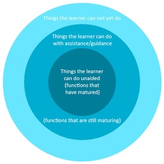

HPS202: Developmental Psychology
(Child
and Adolescent)
Week 1: Identity Development
LO1
Demonstrate knowledge of Erikson’s basic conflicts in childhood and adolescence, and how the outcomes of these conflicts shape identity development.
Erikson’s Theory of Conflict
In contrast to Freud’s theory, Erikson focused more on:
- the social impact of development rather than sexual,
- rational development rather than selfish and irrational,
- activity and the ability for people to adapt to, or overcome damaging early experiences, and
- the notion that development continued after adolescence.
| Stage | Conflict | Approximate age | Virtue |
|---|---|---|---|
| Stage 1 | Trust vs Mistrust | Birth to 18 months | Hope |
| Stage 2 | Autonomy vs Shame and Doubt | 1 to 2 years | Will |
| Stage 3 | Initiative vs Guilt | 3 to 5 years | Purpose |
| Stage 4 | Industry vs Inferiority | 6 to 11 years | Confidence |
| Stage 5 | Identity vs Role Confusion | 12 to 18 years | Fidelity |
| Stage 6 | Intimacy vs Isolation | 18 to 40 years | Love |
| Stage 7 | Generativity vs Stagnation | 40 to 65 years | Care |
| Stage 8 | Integrity vs Despair | 65 years to death | Wisdom |
Limitations of Erikson’s theory
While Erikson’s theory has garnered support for providing a broad framework that covers the entire lifespan and emphasises the importance of social interactions and how relationships shape personal development, critics have suggested the theory is not well described, particularly in relation to the exact mechanisms used for resolving conflicts.LO2
Understand how the 4 Identity statuses’ proposed by Marcia contribute to adolescents’ identity development through combinations of the dimensions of commitment and exploration.
The basis of Marcia’s theory
| Present | Absent | |
|---|---|---|
| Present | IdentityAchievement | IdentityForeclosure |
| Absent | IdentityMoratorium | IdentityDiffusion |
- Influenced by Erikson’s work…
- Marcia (1980) determined that rather than a ‘sense’ or ‘attitude’ about oneself, personal identity was a self-structure, or “An internal, self-constructed, dynamic organisation of drives. abilities, beliefs, and individual history”.
- He believed that the more well-developed this structure is, the more an individual would have a greater idea about their uniqueness and difference to others, and an understanding of their strengths and weaknesses.
- In contrast, those individuals who are less self-aware become confused and rely on external evaluation from others.
- Marcia proposed that identity is dynamic and could change over time.
- Decisions in life are not singular events but rather recurring processes.
- While potentially considered trivial, choices such as relationships, sexual activity, substance use, education, career paths, leisure activities, and political engagement all contribute to the formation of individual identity.
- Over time, these decisions and the underlying motivations coalesce into a consistent framework. However, individuals may circumvent the decision-making process by adhering to familial values, succumbing to external pressures, or experiencing indecisiveness.
- Marcia operationalised Erikson’s theory and proposed 4 types of
identity status:
- identity achievement,
- identity foreclosure,
- identity moratorium, and
- identity diffusion.
- Each identity status involves the presence or absence of a crisis
and the presence or absence of a commitment to that identity.
Identity in Adolescence according to Marcia
- The transition through adolescence toward adulthood it is common to move from diffusion into moratorium (incorporating the exploration of options).
- This transition subsequently moves into identity achievement after options have been explored.
- Different aspects of an individual’s identity may be in different
phases.
- For example, a young person may be committed to a vocation but may be exploring their sexuality (we will explore this further in the topic: Gender & Sexuality).
- Ideally, young people in adolescence should be exposed to various positive experiences and role models to support their journey and positive identity development.
LO3
Understand self-concept, how it develops, whether it can change and self-concept theories.
Self-Concept Definition
Definition: Self-concept is the image we have of ourselves, influenced by interactions with important people in our lives.
Components of Self-Concept:
- Self-Perception: How we view our behaviors, abilities, and unique characteristics.
- Beliefs: Statements like “I am a good friend” or “I am a kind person” contribute to our self-concept.
Examples of Self-Concept:
- Personality Traits: Identification as an extrovert or introvert.
- Life Roles: Importance of roles such as parent, sibling, friend, and partner.
- Hobbies and Passions: Interests that shape identity, like sports enthusiasm or political/religious affiliations.
- Social Contribution: Feelings about one’s impact on society.
Importance of Self-Perception:
- Affects motivations, attitudes, and behaviors.
- Influences feelings of competence and self-worth.
Development of Self-Concept:
- More malleable during youth, as individuals explore self-discovery and identity formation.
- Becomes more detailed and organised with age and experience.
Carl Rogers’ Theory of Self-Concept
Three Components of Self-Concept: 1. Ideal Self: - The person you aspire to be - Attributes or qualities you’re working towards - Your vision of your perfect self 2. Self-Image: - How you currently perceive yourself - Influenced by physical characteristics, personality traits, and social roles 3. Self-Esteem: - How much you like, accept, and value yourself - Affected by others’ perceptions, self-comparisons, and societal roles
Congruence vs. Incongruence: - Congruence: - Alignment between self-concept and reality - Leads to a positive self-concept - Incongruence: - Mismatch between self-image and ideal self - Can negatively impact self-esteem
Origins and Influences: - Childhood Experiences: - Incongruence often rooted in childhood - Conditional parental affection can lead to distorted self-perception - Unconditional Love: - Fosters congruence - Helps children accept themselves without distorting memories
Impact: - Congruence or incongruence significantly affects overall self-concept - Shapes how individuals perceive and interact with their environmentHow Self-Concept Develops
- Influences on Self-Concept Development:
- Interaction and observation of others
- Family members and close friends
- Community members
- Media representations
- Impact of Others’ Beliefs:
- Teacher’s belief in high-performing students’ abilities can positively affect their self-concept
- No similar effect observed for lower-performing students
- Identification with Characters:
- Stories and characters we relate to can shape our self-concept
- Example: Female readers deeply engaged with traditional gender role stories may develop a more feminist self-concept
- Media Influence:
- Both mass media and social media play significant roles
- Promotion of certain ideals can shape personal ideals
- Frequency of exposure to these ideals affects self-identity and self-perception
- Continuous Development:
- Self-concept is not static but evolves through various experiences and influences
- Interactions with different sources contribute to ongoing self-concept formation
Can Self-Concept Be Changed?
- Dynamic Nature of Self-Concept:
- Self-concept is not static and can change over time
- Environmental Influence:
- Physical environments play a role in shaping self-concept
- Places with personal significance contribute to future self-concept
- Societal perceptions of these environments also impact self-concept
- Social Interactions:
- People we interact with can alter our self-concept
- Leaders and authority figures have significant influence
- Impact on Different Aspects of Self:
- Collective self (identity in social groups) can be affected
- Relational self (identity in relationships) can also change
- Medical Diagnoses:
- Can lead to shifts in self-concept
- Example: Late-life autism diagnosis providing clarity and understanding
- Continuous Process:
- Self-concept evolution is ongoing throughout life
- Influenced by new experiences, relationships, and understanding of oneself
- Potential for Intentional Change:
- Awareness of these factors can allow for deliberate efforts to modify self-concept
Other Self-Concept Theories
Social Identity Theory (Henri Tajfel)
- Two essential parts of self-concept:
- Personal identity: Unique traits and characteristics
- Social identity: Based on membership in social
groups
- Examples: sports teams, religions, political parties, social class
- Impact of social identity:
- Influences self-concept
- Affects emotions and behaviours
- Example: Feeling sad or acting out after a team loss
Multidimensional Self-Concept Theory (Bruce A. Bracken)
- Six independent traits:
- Academic: Success or failure in school
- Affect: Awareness of emotional states
- Competence: Ability to meet basic needs
- Family: Functioning within family unit
- Physical: Feelings about appearance, health, and physical condition
- Social: Ability to interact with others
- Key aspect: Self-concept viewed as multidimensional rather than unitary
LO4
Demonstrate knowledge of contemporary perspectives of how processes and mechanisms shape identity in adolescence.
Contemporary Research on Adolescent Identity Development
Intraindividual Processes and Differences
- Dual Cycle Model
- Focus on exploration and commitment in identity formation and maintenance.
- Identity processes generally mature systematically with limited changes.
- Longitudinal studies show stability in identity processes during adolescence and young adulthood.
- Research has shifted to examining intraindividual processes of identity development over time.
- Daily measures reveal associations between commitment-making, exploration, and reconsideration.
- Micro-level processes, including daily emotions and narrative constructions, influence identity development.
- Dynamic System Approach
- Daily fluctuations characterise identity micro-processes.
- Developmental changes often occur during transitions or significant life events.
- Transitions marked by temporary increases in intra-individual variability, followed by stabilisation.
- Life events can shape identity by creating high points, low points, or turning points.
- Normative and non-normative transitions can prompt identity reconsideration.
Identity and Psychosocial Adjustment
- Stable and strong identity commitments associated with better psychosocial adjustment.
- Weaker identity commitments linked to increased risk for various issues (e.g., aggression, substance use, anxiety).
- Positive identity processes lead to better adjustment outcomes.
- Bidirectional relationships exist between identity development and psychosocial adjustment.
- Content of adolescents’ identities and cultural contexts are important considerations.
Identity and Relationships
- Social and personal identity are interconnected; relationships crucial for identity development.
- Supportive relationships provide a secure base for identity exploration.
- Narrative sharing with family and friends helps create coherent identity narratives.
- Autonomy support from parents and peers is important for identity development.
- Parental support and relationship quality positively influence identity exploration and commitment.
- Peer relationships play a significant role, though to a lesser extent than parents.
- Clearer identity may serve as a protective factor against negative peer pressure.
- Various relationships, including romantic partners and teachers, influence identity development.
LO5
Understand the role that culture plays in shaping, interacting with, and promoting a positive socio-cultural identity in an Australian context.
Culture Definition
- No single definition fits all experiences.
- UNESCO defines culture as encompassing spiritual, material, intellectual, and emotional features of society.
- ABS identifies culture as:
- A shared approach to understanding existence.
- Intangible paradigms in collective beliefs, stories, behaviours, and practices.
- Generationally shared and dynamic.
Benefits for Minority Groups: - Positive cultural identification leads to better academic and psychosocial outcomes and lower anti-social behaviour risks.
Identity: - Multidimensional concept, encompassing: - Self-concept, self-esteem, self-efficacy. - Identity exploration and commitment. - Social and narrative identity. - Situational, place, and national identity.
Formation and Connection: - Influenced by family, social supports, formal learning environments, and online interactions. - Positive identity and culture formation benefit from: - Caring home environments and supportive relationships. - Opportunities to explore identity. - Positive community perceptions and cultural engagement.
Risks and Protective Factors: - Risks: Lack of exposure to cultural heritage, social support, and experiences of oppression. - Protective factors: Stable home environment, safe identity exploration, supportive peer relationships, and positive community engagement.
Measurement: - Various scales exist, often validated with American cohorts. - Australian data on youth identity and culture is limited, mostly parent-reported. - International frameworks highlight identity and culture’s importance but lack policy implementation.
Developing Indicators: - Indicators should reflect theory and a conceptual framework, encompassing: - Academic and youth perspectives on identity and culture. - Multi-dimensional, context-dependent nature. - Multiple identity formation sites. - Gender-specific and age-related factors. - Cultural identity’s protective role for minorities. - Consistent with the Convention on the Rights of the Child. - Indicators should emphasise adult responsibility, stakeholder engagement, outcome focus, and relevance for change.
Institutional Sites for Change: - Education and child protection systems are crucial for enhancing youth identity and culture. - Actions include: - Education sectors providing positive feedback and addressing discrimination. - Child protection services facilitating family and cultural connections, holistic support, and community engagement.
Conceptual Framework: - Identity markers: Labels and self-described identity aspects. - Processes: Creation, transmission, and exhibition of markers. - Environment: Context for processes, with key influencers. - Outcomes: Self-worth and social connectedness, including self-efficacy, self-esteem, aspirations, access, participation, and perceptions of belonging and safety.

How do identity and culture relate for First Nations Adolescents?

Week 2: Physical Development
LO1
Understand the principles of hereditary transmission.
The Genetic Material
- Understanding heredity begins at conception.
- Conception occurs when an ovum from a woman’s ovary is fertilised by a man’s sperm.
- This fertilised ovum travels to the uterus via the fallopian tube.
- Inherited traits are determined at conception.
- After establishing what is inherited, we can explore how genes influence our characteristics.
- After conception, a biochemical reaction repels additional sperm upon penetration of the ovum.
- The sperm cell disintegrates within hours, releasing its genetic material, the ovum also releases its genetic material.
- A new cell nucleus forms around the genetic material from both the sperm and ovum, creating a zygote.
- A zygote is 1/20th the size of a pinhead but contains all the material needed to develop into a complete human.
- The human zygote’s nucleus contains 46 chromosomes, which consist of thousands of genes.
- Chromosomes come in matching pairs, one from the mother’s ovum and one from the father’s sperm.
- Each parent contributes 23 chromosomes to their child.
- Genes on each chromosome pair are located at corresponding sites.
- Genes are stretches of DNA, a double-helix molecule that resembles a twisted ladder.
- DNA can duplicate itself, enabling the zygote to develop into a complex human being.
Growth of the Zygote and Production of Body Cells
- The zygote begins to replicate through mitosis while moving to the
uterus.
- Initial divisions: 1 cell becomes 2, 2 become 4, 4 become 8, and so on.
- Before each division, the cell duplicates its 46 chromosomes.
- Each new cell has 23 pairs of chromosomes, identical to the original cell.
- By birth, the child consists of billions of cells formed through mitosis.
- Mitosis creates new cells for growth and replaces damaged cells throughout life.
- Every new cell contains an exact copy of the 46 chromosomes inherited at conception.
The Germ (or Sex) Cells
- In addition to body cells, human beings have germ cells that solely
produce gametes (sperm in males and ova in females).
- Gametes are produced through the process of meiosis:
- Meiosis shares some of the characteristics of mitosis, but it differs in ways that make the resulting cells able to join with gametes to create a unique cell that will become a unique individual. Only the germ cells reproduce in this way.
- Gametes are produced through the process of meiosis:
Production of Gametes Through Meiosis
- Male germ cells in the testes and female germ cells in the ovaries
produce sperm and ova through a process called meiosis.
- The germ cell first duplicates its 46 chromosomes.
- Then an event called crossing-over often takes place: adjacent duplicated chromosomes cross and break at one or more points along their length, exchanging segments of genetic material.
- This transfer of genes during crossing-over creates new and unique hereditary combinations.
- Next, pairs of duplicated chromosomes (some of which have been altered by crossing-over) segregate into two new cells, each of which contains 46 chromosomes.
- Finally, the new cells divide so that each of the resulting gametes contains 23 single, or unpaired, chromosomes.
Hereditary Uniqueness
- At conception, a sperm with 23 chromosomes unites with an ovum with
23 chromosomes, producing a zygote with a full set of 46 chromosomes.
- Siblings with both the same parents have inherited 23 chromosomes from each, however, the process of meiosis ensures genetic uniqueness between siblings.
- During meiosis, the segregation of chromosome pairs into new cells is random.
- Human germ cells have 23 chromosome pairs, allowing for over 8 million combinations per parent.
- As a result of the crossing over process, a couple could theoretically produce 64 trillion unique genetic combinations in their offspring.
Multiple Births
- A zygote will split into separate but identical cells, which then
become two individuals.
- Monozygotic (identical) twins occur in about 1 of every 250 births around the world, and develop from a single zygote and have identical genes.
- Monozygotic twins should show very similar developmental progress.
- Dizygotic (fraternal) twins occur in approximately 1 of every 125 births, and occur when a mother releases two ova at the same time and each is fertilised by a different sperm.
- Autosomes: The 22 pairs of human chromosomes that are identical in males and females.
Male or Female?
- 22 of 23 pairs are similar in males and females (autosomes), with
the 23rd pair, the sex chromosomes, determining sex.
- Males have one X and one Y chromosome, while females have two X chromosomes.
- Fathers determine the sex of their children, with sperm carrying either an X or a Y chromosome, and ova always carrying an X chromosome.
- The child’s sex is determined by whether an X-bearing or a Y-bearing sperm fertilises the ovum.
What do genes do?
- Produce amino acids, forming enzymes and proteins necessary for new
cells.
- Regulate melanin production, affecting eye color.
- Guide cell differentiation, determining cell roles (e.g., brain, skin).
- Are influenced by their biochemical environment during development.
- Regulatory genes control the timing and pace of development, turning other genes on and off.
- Environmental factors influence gene function, affecting traits like height despite genetic potential.
- Gene expression can be affected at multiple levels: nuclear environment, cellular surroundings, and external environment.
- Environmental effects can be experience-expectant (universal) or experience-dependent (individual-specific).
- Genes interact with the environment to produce proteins that influence human characteristics, not just “code” for traits.
How Are Genes Expressed?
- There are four main patterns of genetic expression:
- Simple dominant-recessive inheritance:
- Gregor Mendel discovered patterns in inheritance by cross-breeding peas, identifying dominant and recessive traits.
- Dominant traits appear more often in offspring, while recessive traits are less common.
- In simple dominant-recessive inheritance, the dominant allele’s trait is expressed over the recessive allele.
- Example: Normal vision (dominant allele) vs. nearsightedness (recessive allele).
- Three possible genotypes for vision:
- Homozygous normal vision (NN)
- Homozygous nearsightedness (nn)
- Heterozygous (Nn) with normal vision
- NN individuals pass only normal vision genes; nn individuals pass nearsightedness genes.
- Nn individuals have normal vision but can pass either normal vision or nearsightedness genes to offspring.
- Two heterozygous (Nn) parents can produce a nearsighted child.
- Punnett Squares represent the possible combinations of parents’ alleles and their outcomes.
- The normal-vision/nearsightedness trait is one example of many human attributes determined by single gene pairs where one allele is dominant.
- Codominance:
- Codominance occurs when alternative gene forms produce a phenotype that is a compromise between the two.
- Blood type example: Alleles for blood types A and B are equally expressive, resulting in AB blood type.
- Another type of codominance is incomplete dominance, where one allele is stronger but doesn’t fully mask the other’s effects.
- Sickle-cell trait is an example of incomplete dominance.
- About 8% of African Americans are heterozygous for the sickle-cell trait, carrying one sickle-cell allele.
- Carriers may have some red blood cells in a sickle shape, leading to potential circulatory issues under stress.
- Individuals with two recessive sickle-cell alleles develop sickle-cell anemia.
- Sickle-cell anemia results in severe blood disorder, poor oxygen distribution, and can lead to early death from heart, kidney, or respiratory issues.
- Sex-linked inheritance:
- Sex-linked characteristics are determined by genes on the sex chromosomes.
- Most sex-linked traits are produced by recessive genes on the X chromosome.
- Males (XY) are more likely to inherit these traits because they have only one X chromosome.
- Example: Red/green color blindness is caused by a recessive gene on the X chromosome.
- A male with this gene on his X chromosome will be color-blind, as there is no corresponding gene on the Y chromosome.
- Females (XX) are not color-blind unless both X chromosomes carry the recessive gene.
- More males are color-blind (8 in 100) compared to females (1 in 144).
- Over 100 sex-linked characteristics exist, many of which are disabling (e.g., hemophilia, muscular dystrophy, optic nerve degeneration).
- Males are more likely to suffer from these disorders due to the recessive genes on the X chromosome.
- Polygenic (or multiple-gene) inheritance:
- Polygenic traits are influenced by many pairs of alleles, such as height, weight, intelligence, skin color, temperament, and cancer susceptibility.
- More genes contributing to a trait increase the number of possible genotypes and phenotypes.
- Polygenic traits show continuous variation, typically following a normal bell-curve distribution.
- Few individuals have extreme traits; most are in the middle of the distribution.
- Polygenic characteristics can involve complex inheritance patterns, including co-dominance, incomplete dominance, or sex-linked inheritance.
- These traits are more complex than single-gene traits.
- Most traits of interest to psychologists (e.g., intelligence, personality, mental health) are influenced by many genes.
- A simple formula (one gene = one trait) is insufficient for understanding these traits.
- The exact number of allele pairs influencing traits like height or intelligence is unknown.
- Genes interact with environmental influences to create individual differences in important human attributes.
- Many human characteristics are influenced by a single pair of genes (alleles), one from each parent.
- Simple dominant-recessive inheritance:
LO2
Understand the stages of prenatal development and the influence of teratogens.
The Period of the Zygote
- Movement and Division:
The zygote moves down the fallopian tube towards the uterus, dividing by mitosis into two cells.
These cells continue to divide, forming a blastocyst with 60 to 80 cells within 4 days.
The inner layer of the blastocyst becomes the embryo; the outer layer forms protective tissues.
Implantation:
- 6 to 10 days after conception, the blastocyst develops tendrils that burrow into the uterine wall, initiating implantation.
- This process involves the blastocyst attaching to and penetrating the uterine wall within a 48-hour window, completing around 10 to 14 days after ovulation.
- About half of fertilised ova fail to implant, and many that do may be genetically abnormal or improperly situated.
Development of Support Systems:
- After implantation, the blastocyst forms four support structures:
- Amnion: Watertight sac that cushions the embryo, regulates temperature, and provides a weightless environment.
- Yolk Sac: Produces blood cells until the embryo can produce its own.
- Chorion: Surrounds the amnion and becomes the placenta’s lining.
- Allantois: Forms the umbilical cord.
- After implantation, the blastocyst forms four support structures:
Purpose of the Placenta:
- The placenta, fed by maternal and embryonic blood vessels, has a semi-permeable barrier allowing gases, salts, and nutrients to pass through.
- It delivers oxygen and nutrients to the embryo and removes carbon dioxide and metabolic wastes via the umbilical cord.
- The placenta is essential for sustaining the embryo through metabolic transactions.
The Period of the Embryo
- Duration:
Lasts from implantation (around the 3rd week) through the 8th week of pregnancy.
Early Development:
- By the 3rd week, the embryonic disk differentiates into three cell
layers:
- Ectoderm: Becomes the nervous system, skin, and hair.
- Mesoderm: Develops into muscles, bones, and the circulatory system.
- Endoderm: Forms the digestive system, lungs, urinary tract, pancreas, and liver.
- The neural tube forms from the ectoderm and will become the brain and spinal cord.
- By the end of the 4th week, the heart is formed and begins to beat; eyes, ears, nose, mouth, and limb buds appear.
- The embryo is about 1/4 inch long and 10,000 times the size of the original zygote.
- By the 3rd week, the embryonic disk differentiates into three cell
layers:
2nd Month Development:
- The embryo grows approximately 1/30 inch per day and develops more human features.
- A primitive tail forms and later becomes the coccyx (tip of the backbone).
- By the 5th week, the eyes have corneas and lenses; by the 7th week, ears are well-formed and a rudimentary skeleton appears.
- Limbs develop from the body outward, with arms and legs forming in a similar sequence.
- The brain develops rapidly and directs the first muscular contractions.
Sexual Development:
- By the 7th and 8th weeks, the embryo shows sexual development with the formation of the indifferent gonad.
- In males, a gene on the Y chromosome causes the indifferent gonad to develop into testes.
- In females, the gonad develops into ovaries without additional instructions.
- The embryo’s circulatory system functions independently as the liver and spleen start producing blood cells.
End of 2nd Month:
- The embryo is slightly more than an inch long and weighs less than 1/4 ounce.
- Major structures are formed, and the embryo begins to look more human.
The Period of the Fetus
- Duration:
Lasts from 8 weeks of pregnancy until birth, characterised by rapid growth and refinement of organ systems.
Development stages do not align with trimesters; the fetus becomes recognisable as such around 8 weeks post-conception, and early stages of development (zygotic and embryonic) often occur before pregnancy is recognised.
Third Month:
- Organ systems formed earlier continue to grow and interconnect.
- Fetus performs subtle movements (kicking, making fists) that are not yet felt by the mother.
- Digestive and excretory systems become functional, allowing swallowing, digesting, and urinating.
- Sexual differentiation occurs; male fetuses secrete testosterone, leading to the development of the penis and scrotum, while female genitalia form in the absence of testosterone.
- By the end of the 3rd month, the fetus is about 3 inches long and weighs less than an ounce.
Fourth to Sixth Months:
- Fetus grows rapidly; by 16 weeks, it is 8-10 inches long and weighs about 6 ounces.
- Increased complexity in movements (sucking, swallowing, breathing) prepares the fetus for life outside the womb.
- The fetus starts kicking strongly enough to be felt by the mother, and its heartbeat can be heard with a stethoscope.
- Nails harden, skin thickens, and hair appears. Vernix and lanugo cover the fetus.
- By the end of the 6th month, the fetus’s senses (visual and auditory) are functional, with responses to sound and light.
Seventh through Ninth Months:
- Final “finishing phase” of rapid organ system maturation.
- By 22-28 weeks, fetuses reach the age of viability, showing more organised heart rate and motor activity.
- By the end of the 7th month, the fetus weighs about 4 pounds and is 16-17 inches long; by 8 months, it grows to 18 inches and gains another 1-2 pounds.
- Fat deposits under the skin help insulate the newborn.
- Fetal activity slows, and sleep increases by the 9th month; the fetus assumes a head-down position for birth.
- Uterine contractions prepare the mother for labor and delivery.
Potential Problems in Prenatal Development
- Teratogens:
- Definition: Any disease, drug, or environmental agent that can harm a developing embryo or fetus.
- Principles:
- Sensitive-period principle: Effects are worst when an organ or body part is forming.
- Individual-difference principle: Susceptibility varies based on genetics and prenatal environment.
- Multiple teratogens can cause the same defect; one teratogen can cause various defects.
- Longer or higher exposure increases harm (dosage principle).
- Both parents’ exposures can affect the fetus.
- Long-term effects depend on the postnatal environment.
- Sleeper effects may not be apparent until later in life.
- Diseases Suffered by the Pregnant Woman:
- Rubella: Can cause blindness, deafness, and heart defects, especially if contracted early in pregnancy.
- Toxoplasmosis: Caused by a parasite; can lead to severe damage or miscarriage.
- Sexually Transmitted Diseases:
- Syphilis: Harmful in later stages of pregnancy; can cause serious defects or miscarriage.
- Genital Herpes: Can lead to severe disabilities or death; cesarean delivery is often recommended.
- AIDS: Transmitted prenatally, during birth, or through breastfeeding; antiviral drugs can reduce transmission and improve outcomes.
- Drugs:
- Thalidomide: Caused severe birth defects when used in the first two months of pregnancy, including limb abnormalities.
- Other Common Drugs:
- Heavy use of aspirin and ibuprofen can lead to growth retardation and complications.
- Excessive caffeine linked to miscarriage and low birth weight.
- Some prescription drugs, like antidepressants containing lithium, can cause heart defects.
- Diethylstilbestrol (DES): Used to prevent miscarriages; linked to reproductive organ abnormalities and cancer in later life.
- Alcohol:
- Affects fetal development directly and indirectly by impairing placenta function.
- Fetal Alcohol Syndrome (FAS) includes microcephaly, heart malformations, and growth delays.
- FAS babies often have irritability, hyperactivity, and learning disabilities.
- Moderate drinking can cause Fetal Alcohol Effects (FAE), such as growth retardation and learning deficits.
- No amount of alcohol is considered safe; risks include miscarriage and developmental delays.
- Drinking in any trimester can be harmful; affects both fetal and male reproductive systems.
- Cigarette Smoking:
- Linked to cleft lip/palate, abnormal lung function, hypertension, miscarriage, and low birth weight.
- Increases risks of ectopic pregnancy and sudden infant death syndrome (SIDS).
- Smoking impairs placenta function, affecting oxygen and nutrient exchange.
- Long-term effects include smaller size, respiratory infections, and cognitive issues.
- Smoking interacts with other drugs, exacerbating teratogenic effects.
- Strongly advised to avoid smoking during pregnancy.
- Illicit Drugs:
- Widespread exposure, including marijuana, cocaine, and heroin, leads to various defects.
- Marijuana use affects emotional regulation and can cause developmental issues like poor academic performance.
- Heroin and methadone use are linked to higher miscarriage rates, preterm delivery, and withdrawal symptoms in newborns.
- Cocaine use constricts blood vessels, leading to prematurity and developmental deficits such as lower IQ and language issues.
- Prenatal cocaine exposure can also affect emotional bonding and intellectual development.
- General advice is to avoid all drugs unless absolutely necessary and approved by a physician.
Environmental Hazards
- Radiation:
- Teratogenic effects observed from the 1945 atomic blasts in Japan; severe outcomes included high rates of infant mortality and mental retardation in survivors.
- The exact radiation threshold for harm is unclear, but potential long-term complications are a concern.
- Pregnant women are advised to avoid non-essential X-rays, especially of the pelvis and abdomen.
- Chemicals and Pollutants:
- Pregnant women may encounter toxic substances like dyes, additives, and pesticides, some of which are teratogenic in animals.
- Exposure to pollutants such as lead, zinc, and mercury can impair health and cause physical and mental developmental issues in embryos and fetuses.
- The highest damage occurs with exposure during both pregnancy and breastfeeding.
- Environmental toxins can also affect the reproductive health of fathers, leading to increased risks of miscarriage and genetic defects in children.
- Both parents should limit exposure to known teratogens to reduce risks to their offspring.
Characteristics of the Pregnant Woman
- Nutrition:
- Historical advice recommended minimal weight gain; current guidelines suggest a gain of 25-35 pounds with a high-protein, high-calorie diet.
- Severe malnutrition during pregnancy can lead to small, underweight babies and increased risk of cognitive deficits.
- Malnutrition impacts vary by trimester: early malnutrition can disrupt spinal cord formation and induce miscarriages, while later malnutrition may result in low-birth-weight babies with small heads.
- Dietary supplements and responsive caregiving can mitigate long-term effects of prenatal malnutrition.
- Adequate intake of vitamins and minerals is crucial: magnesium and zinc improve placenta function, and folic acid helps prevent neural tube defects like Down syndrome and spina bifida.
- Recommended daily allowance of folic acid is 0.4 to 1.0 milligrams, especially critical during early pregnancy. However, excessive intake, particularly of vitamin A, should be avoided.
The Pregnant Woman’s Emotional Well-Being
- Impact of Stress on Fetus:
- Emotional arousal in pregnant women leads to hormone secretion (e.g., adrenaline) that can affect fetal motor activity and heart rate.
- Temporary stress (e.g., a fall or argument) generally has minimal impact, but prolonged severe stress is linked to issues like stunted growth, premature delivery, low birth weight, and birth complications.
- High maternal stress is associated with increased fetal motor activity and irregularities in infant behavior such as irritability and difficulty with feeding and sleeping.
- Studies show infants of mothers with high cortisol levels (stress hormone) tend to be more irritable and have difficult temperaments.
- Long-term effects of prenatal stress include an increased risk of ADHD, externalising behaviors, and anxiety, especially when stress occurs between weeks 12 and 22 of gestation.
- Stress may impair fetal growth by diverting blood flow away from the fetus, weakening the immune system, and leading to poor maternal health behaviors (e.g., poor diet, smoking, alcohol use).
- Emotional stress can affect maternal caregiving, potentially perpetuating infant behavioral issues.
- Not all stressed mothers experience complications. Effective stress management and social support play crucial roles in mitigating negative outcomes.
- Counseling and support for stressed pregnant women can improve birth outcomes, such as higher birth weights.
- Moderate maternal stress may be beneficial for fetal development, promoting neurological integration and developmental progress, as stress hormones can aid in organ maturation.
The Pregnant Woman’s Age
- Optimal Age for Childbearing:
- Ideal age for pregnancy is between 16 and 35 years.
- Risks for fetal and neonatal death increase significantly for mothers aged 15 or younger.
- Teen mothers (under 16) face higher chances of birth complications, premature delivery, and low-birth-weight babies compared to mothers in their 20s.
- Challenges for Younger Mothers:
- Younger mothers often come from economically disadvantaged backgrounds, leading to poor nutrition, high stress, and limited access to prenatal care.
- Good prenatal care and medical supervision can mitigate these risks.
- Risks for Older Mothers:
- Women over 35 face higher risks of miscarriage and pregnancy complications due to increased likelihood of chromosomal abnormalities.
- Older mothers may experience more complications during pregnancy and delivery, though many have normal pregnancies and healthy babies, especially if they are healthy and well-nourished.
Prevention of Birth Defects
- Perception vs. Reality: Although concerns about birth defects and potential hazards are common, the majority of embryos do not encounter significant issues and many that do are either not carried to term or have minor, correctable problems.
- Statistics: Over 95% of newborns are perfectly normal, with the remaining 5% risk having congenital issues that are temporary or easily correctable.
- Prevention Strategies:
- Parents can reduce the risk of birth defects by following recommended guidelines.
- Every pregnancy is unique, and efforts to ensure a healthy pregnancy are valuable.
- Encouragement: Despite potential hazards, significant efforts to ensure a healthy prenatal environment can greatly improve the chances of a normal, healthy baby.
LO3
Understand neural development and plasticity.
Brain Development
- Early Brain Growth:
- The brain grows rapidly in early life, reaching 75% of adult weight by age 2.
- Significant brain growth occurs in the last 3 prenatal months and the first 2 years post-birth.
- Neural Development and Plasticity:
- The brain consists of over a trillion specialised cells (neurons) connected by synapses.
- Most neurons are formed by the end of the second trimester, but new neurons continue to form in the hippocampus throughout life.
- Brain growth spurt is driven by the development of glial cells, which support and insulate neurons with myelin.
- Neural Development:
- Neurons differentiate and specialise based on their location.
- Synaptogenesis occurs rapidly, leading to an initial excess of neurons and connections, with unused ones being pruned.
- Role of Experience:
- Early experience significantly influences brain development.
- Studies show that sensory deprivation and enriched environments affect neural development.
- Higher socioeconomic status and maternal education are associated with larger brain size in children.
LO4
Understand how the brain differentiates and grows.
- Brain Differentiation and Growth:
- At birth, subcortical brain centers are most developed; higher cortical areas mature later.
- Myelinisation enhances neural communication and continues into late adolescence, affecting motor and cognitive functions.
- Cerebral Lateralisation:
- The brain has two hemispheres with specialised functions: the left for language and positive emotions, and the right for visual-spatial processing and negative emotions.
- Lateralisation begins prenatally and becomes more pronounced with age, influencing handedness and cognitive functions.
- Adolescent Brain Development:
- Myelinisation of higher brain centers continues into adolescence, improving attention spans and processing speed.
- Brain plasticity persists beyond puberty, with ongoing reorganisation of the prefrontal cortex and synaptic pruning.
LO5
Understand the factors that influence physical development.
Causes and Correlates of Physical Development
- Biological Mechanisms
- Physical development results from the interplay between nature and nurture.
- Genetic factors significantly influence growth patterns, such as height and maturation rates.
- Growth hormone (GH) is crucial for normal growth and is regulated by the pituitary gland.
- Hormonal Influences
- Hormones like testosterone and oestrogen play key roles in adolescent growth spurts and sexual maturation.
- GH and sex hormones are involved in the development of secondary sexual characteristics.
- The precise triggers for hormonal changes during adolescence are not fully understood.
- Environmental Influences
- Nutrition
- Adequate nutrition is essential for proper growth; malnutrition leads to slow or stunted growth.
- Short-term undernutrition may result in catch-up growth when the diet improves.
- Prolonged undernutrition, especially in early years, can cause significant growth and developmental delays.
- Common nutritional diseases include marasmus (insufficient protein and calories) and kwashiorkor (insufficient protein with adequate calories).
- Overnutrition, particularly in Western societies, leads to obesity and associated health risks like diabetes and heart disease.
- Poor eating habits and lack of exercise contribute to obesity; sedentary activities like excessive TV watching are linked to higher obesity rates.
- Illnesses
- Common childhood illnesses have minimal long-term effects on growth if the child is well-nourished.
- Major illnesses in undernourished children can stunt growth due to weakened immune systems and poor nutrient absorption.
- Emotional Stress and Lack of Affection
- Nonorganic failure to thrive and deprivation dwarfism are growth disorders linked to emotional neglect and lack of affection.
- Nonorganic failure to thrive is characterized by poor growth despite adequate nutrition and is often due to emotional neglect.
- Deprivation dwarfism results from emotional deprivation and impacts growth rates, despite proper nutrition.
- Early intervention and improved caregiving can reverse these conditions and support catch-up growth.
- Nutrition
Week 3: Emotional Development
LO1
Understand the sequencing of discrete emotions.
Emotional Development
- Infant Emotions
- Infants display a range of emotions such as interest, joy, anger, and fear from a young age.
- Studies show that even very young babies have recognizable emotional expressions, which become clearer with age.
- Development of Emotional Expressions
- Different emotions appear at different stages during the first two
years of life:
- At birth: Interest, distress, disgust, and contentment.
- By 2 months: Social smiles and basic emotions like anger, sadness, joy, surprise, and fear.
- Later in the 2nd year: Complex emotions such as embarrassment, shame, guilt, envy, and pride emerge.
- Different emotions appear at different stages during the first two
years of life:
- Self-Conscious Emotions
- Embarrassment: Emerges with self-recognition in mirrors or photos.
- Self-Evaluative Emotions: Require both self-recognition and understanding of rules or standards (e.g., pride, shame, guilt).
- Impact of Parental Reactions
- Pride and Shame:
- Children’s expressions of pride or shame are influenced by parental feedback.
- Positive reinforcement leads to more pride and less shame.
- Negative reinforcement can increase feelings of shame and decrease pride.
- Guilt vs. Shame:
- Parental reactions affect whether a child feels guilt or shame in response to misbehavior.
- Critical reactions lead to shame.
- Constructive criticism and encouragement lead to guilt and attempts to make amends.
- Pride and Shame:
- Developmental Aspects
- Toddlers and young preschoolers often display self-evaluative emotions in the presence of adults.
- True internalisation of evaluative standards and emotions typically develops later in elementary school.
LO2
Understand emotional display rules, self-regulation, and competence.
Socialization of Emotions and Emotional Self-Regulation
- Emotional Display Rules
- Societies have rules specifying when and how emotions should be expressed.
- Children learn these rules early, often modeled by their parents.
- Different cultures have different norms for acceptable emotional expressions.
- Regulating Emotions
- Early emotional regulation is managed by caregivers through soothing techniques.
- By six months, infants start to self-regulate using actions like thumb sucking or turning away.
- By the end of the first year, infants develop strategies like rocking or moving away from distressing stimuli.
- By 18-24 months, toddlers try to control people or objects that upset them and distract themselves from disappointments.
- Young children use distraction and reinterpretation to cope with negative emotions.
- Effective emotional regulation involves suppressing, maintaining, or intensifying emotions as needed.
- Parental Influence
- Parents help children deal with emotions through distraction and constructive discussion.
- Children exposed to frequent negative emotions at home may struggle with emotional regulation.
- Parental responses to emotions can encourage children to feel sympathy, guilt, or pride.
- Acquiring Emotional Display Rules
- By age three, children begin to disguise their true feelings.
- Preschool children gradually improve in masking emotions and lying convincingly.
- School-aged children become more aware of and compliant with emotional display rules.
- Girls generally are better at complying with display rules due to stronger social pressures.
- Older adolescents who manage their emotions well have better social outcomes.
- Cultural Variations
- Communal cultures emphasize social harmony and compliance with emotional display rules.
- Compliance with display rules is motivated by a desire for social harmony and acceptance.
- Children who master emotional display rules are viewed as more likable and competent.
Emotions and Early Social Development
- Role of Emotions in Early Social Development
- Emotions serve a communicative function affecting caregiver behavior.
- Infant emotions like distress, joy, and anger communicate needs and desires to caregivers.
- Emotional expressions help infants and caregivers understand each other and foster social contact.
- Recognition and Interpretation of Emotions
- Infants develop the ability to recognize and interpret others’ emotions.
- Social referencing helps infants learn from others’ emotional reactions.
- Caregivers’ emotional displays contribute significantly to a child’s understanding of their environment.
- Emotional Competence and Social Competence
- Emotional competence is crucial for achieving personal goals in social interactions while maintaining positive relationships.
- Emotional Intelligence (EQ) involves perceiving, facilitating, understanding, and managing emotions.
- Emotional competence has three components:
- Competent Emotional Expressivity: Frequent positive emotions, infrequent negative emotions.
- Competent Emotional Knowledge: Correctly identifying others’ feelings and their causes.
- Competent Emotional Regulation: Adjusting emotional arousal to appropriate levels to achieve goals.
- Each component is related to social competence, influencing how children are perceived by teachers and peers.
- Impact of Emotional Competence
- Children who express positive emotions and regulate their emotions well are viewed more favorably.
- High emotional understanding correlates with high social competence and positive relationships.
- Poor emotional regulation, especially of anger, can lead to rejection by peers and adjustment problems.
- Emotional Competence and Personality Development
- Emotional competence contributes to the development of children’s personalities.
- Emotions and their expression influence self-perception and personality.
LO3
Understand temperament, including the factors that influence it and its stability.
Temperament and Development
- Infant Temperament
- Infants have distinct personalities, described in terms of temperament.
- Defined by individual differences in emotional, motor, and attentional reactivity and self-regulation.
- Thomas and Chess classified infants as “easy,” “difficult,” or “slow to warm up.”
- Six dimensions of temperament:
- Fearful distress: wariness, distress, and withdrawal in new situations.
- Irritable distress: fussiness and distress when desires are frustrated.
- Positive affect: frequency of smiling, laughing, and willingness to approach others.
- Activity level: amount of gross motor activity.
- Attention span/persistence: length of time focusing on objects or events.
- Rhythmicity: regularity of bodily functions.
- Hereditary and Environmental Influences
- Temperament has a biological foundation and is genetically influenced.
- Identical twins show more similarity in temperament than fraternal twins.
- Home environment influences positive aspects of temperament, while nonshared environments shape negative aspects.
- Parenting styles and early behavioral differences impact temperament.
- Cultural Influences
- Cultural values shape the desirability of certain temperamental traits.
- Shyness is viewed negatively in the U.S. but positively in some Asian cultures.
- Cultural changes can alter the social desirability of traits like shyness over time.
- Stability of Temperament
- Components like activity level, irritability, sociability, and fearfulness are moderately stable through infancy to adulthood.
- Behavioral inhibition (withdrawal from unfamiliar people or situations) is a stable attribute with biological roots.
- Environmental factors, such as parenting styles, can influence the stability of inhibition.
- Long-Term Impact
- Temperament forms the cornerstone of adult personality.
- Early temperamental traits can predict future behaviors and social outcomes.
LO4
Understand attachment, including the phases and theories.
Attachment and Development
- Personal Experience:
Stayed home for first 2 years of daughters’ lives.
Daughters initially cried when left at daycare, but adapted quickly.
Cried at pickup after a few weeks, indicating secure attachments.
Emotional Attachments:
- Described by John Bowlby as strong affectional ties.
- Provide comfort and pleasure in interactions.
- Example: 10-month-old showing attachment to mother by seeking her when upset.
Reciprocal Relationships:
- Attachments are mutual between parents and infants.
- Parents begin forming attachments before birth through positive anticipation and early interactions.
- Emotional attachments build over time through regular interactions.
Interactional Synchrony:
- Synchronized routines between caregivers and infants contribute to attachment growth.
- Infants develop expectancies for social interactions.
- Examples include gazing, smiling, and face-to-face play.
Phases of Attachment Development:
- Asocial Phase (birth to 6 weeks): Infants react favorably to social and nonsocial stimuli.
- Indiscriminate Attachments (6 weeks to 7 months): Preference for people, enjoyment from any human interaction.
- Specific Attachment Phase (7 to 9 months): Attachment to a specific person, usually the mother.
- Multiple Attachments (9 to 18 months): Formation of attachments to several people.
Theories of Attachment:
- Psychoanalytic Theory: Attachment due to feeding and oral satisfaction.
- Learning Theory: Attachment through association with comfort and positive responses.
- Cognitive-Developmental Theory: Attachment linked to cognitive abilities like object permanence.
Contemporary Theories:
- Ethological Theory: Innate behaviors promote attachment for survival.
- Bowlby’s Perspective: Secure attachments develop through responsive interactions and are crucial for survival.
Attachment-Related Fears:
- Stranger Anxiety: Wary reactions to unfamiliar people, peaking at 8 to 10 months.
- Separation Anxiety: Discomfort when separated from primary attachment figures, peaking at 14 to 18 months.
LO5
Understand differences in attachment, including how it is measured, the types, and the influence of caregiving quality and infant characteristics.
Individual Differences in Attachment Quality
- Differences in Attachment Quality:
Home-reared infants establish varying quality of attachment with caregivers.
Some infants are secure and relaxed; others are anxious and uncertain.
Researchers aimed to measure attachment quality to understand these differences and their impact on later development.
Assessing Attachment Security:
- Strange Situation:
- Developed by Mary Ainsworth.
- Involves eight episodes simulating caregiver-infant interactions, separations, and reunions.
- Measures infant’s exploratory activities, reactions to strangers, separations, and behaviors during reunions.
- Classifications:
- Secure attachment (65%): Infants explore, greet mother warmly, seek contact if distressed, outgoing with strangers when mother is present.
- Resistant attachment (10%): Infants stay close to mother, distressed by separation, ambivalent on reunion, wary of strangers.
- Avoidant attachment (20%): Infants show little distress on separation, ignore mother on reunion, sociable or avoidant with strangers.
- Disorganized/disoriented attachment (5%): Infants exhibit confused behavior, act dazed, may approach and avoid mother simultaneously.
- Attachment Q-set (AQS):
- Used for children aged 1-5.
- Observer sorts 90 descriptors of attachment-related behaviors.
- Provides a profile of attachment security.
- Versatile for older preschool children in natural environments.
- Strange Situation:
Cultural Variations in Attachment Classifications:
- Attachment classifications differ across cultures reflecting child-rearing practices.
- Example: Northern German parents encourage independence, leading to more avoidant behaviors.
- Example: Japanese mothers’ close contact and focus on amae leads to behaviors classified as insecure in the Strange Situation but valued in their culture.
- Western researchers often view attachment security as culturally universal but recognize variations in caregiving patterns and their outcomes.
- Importance of understanding secure attachment may vary, reflecting cultural values and practices.
Father’s Role in Attachment:
- Early research focused mainly on mothers.
- Increasing focus on fathers and whole families as attachment figures.
- Exploration of fathers’ contributions to infants’ social and emotional development.
Fathers as Caregivers
- Historical Context:
Fathers were once seen as minor contributors to child development.
They spend less time interacting with babies compared to mothers.
Despite this, fathers are fascinated with their newborns and increase involvement over the first year.
Attachment:
- Infants often form secure attachments to fathers if the father has a positive attitude, spends time with them, and is a sensitive caregiver.
- Fathers tend to engage in playful physical stimulation and unusual games.
- Infants prefer mothers when upset but often prefer fathers as playmates.
- Fathers can become skillful caregivers and serve as a secure base for exploration.
Emotional Security and Social Competence:
- Children securely attached to both parents are less anxious, socially withdrawn, and adjust better to school.
- Secure attachment with fathers leads to better emotional self-regulation, social competencies, and lower levels of problem behaviors and delinquency.
- Benefits of secure attachment with fathers are evident even if the father does not reside in the home.
- Secure attachment with both parents contributes the most to a child’s development.
Factors That Influence Attachment Security
- Influencing Factors:
Quality of caregiving
Emotional climate of the home
Health conditions and temperaments of infants
Quality of Caregiving:
- Secure attachments: Sensitive, responsive caregiving from the beginning.
- Resistant attachments: Inconsistent caregiving.
- Avoidant attachments: Impatient, unresponsive, or overzealous caregiving.
- Disorganized/disoriented attachments: History of neglect or abuse.
At-Risk Insensitive Caregivers:
- Clinically depressed parents
- Parents who were neglected or abused as children
- Parents of unwanted pregnancies
- Caregivers with health, legal, or financial problems
- Unhappily married parents
Intervention and Assistance:
- Infant mental health (IMH) interventions
- Programs improving caregiver sensitivity and responsiveness
Infant Characteristics:
- Jerome Kagan’s temperament hypothesis: Attachment behaviors reflect infant temperament.
- Evidence against the extreme temperament hypothesis: Secure and insecure attachments can vary between caregivers.
- Studies show environmental influences and caregiving are more predictive of attachment quality than genetics or temperament alone.
Combined Influences of Caregiving and Temperament:
- Quality of caregiving predicts secure vs. insecure attachments.
- Infant temperament predicts type of insecurity.
- Goodness-of-fit model: Secure attachments from a good fit between caregiving and infant temperament.
Week 5: Cognitive Development
LO1
Piaget’s Cognitive Development Theory
Overview
| Stage | Age (yrs) | Key Features and Emerging Structures |
|---|---|---|
| Sensorimotor Intelligence | 0-2 | - Sensory and motor adaptation - Causal schemes and reasoning. - Understanding of objects including object permanence and categorization of objects. |
| Preoperational Thought | 2-7 | - Loose, egocentric logic. - Acquisition of semiotic (representational) thought supporting mental manipulation of objects rather than relying on direct behaviour: - Imitation in the absence of the model - Mental Images - Symbolic Drawing - Symbolic Play - Language |
| Concrete Operational Thought | 7-11 | - Mental operations involving the representation of objects and
relationships among objects. - Coordination of mental structures including identity, reversibility, and reciprocity resulting in conservation of mass, number, weight, and volume. - Classification, including structures for class inclusion and class hierarchies. |
| Formal Operational Thought | 12+ | - Mental operations that form a logical system which can be applied
to hypothetical as well as to concrete or real-world problems. - Structures that permit coordination of multiple variables; probabilistic thinking; and reflection about one’s thoughts and reasoning. |
Key concepts of Piaget’s Theory
Typical Development
- An adult’s ability to formulate, execute and evaluate the outcome of a plan is dependent on the outcomes of mastery experiences.
- Mastery and a sense of competence are derived from the investigation of our environment, directed problem solving, and persistence toward a goal.
Schemes
- A scheme is “the structure or organisation of actions as they are transferred or generalised by repetition in similar circumstances.”
- The two primary schemes begin formation in infancy through:
- Actions such as grasping and sucking,
- Linking actions together (i.e., climbing into a high chair, or crawling to the door to meet Dad).
- Further schemes develop for people, objects, actions, and emotional capacities (i.e., visual abilities to establish who is familiar and who is not, or auditory abilities to express contentment or distress).
- Schemes continue to develop throughout life, although they may be difficult to explain to another.
Adaptation
- Adaptation contributes to organised thought which contributes to structured thought
- The context and diversity of experiences stimulate the formation of new schemes.
- Adaptation is the process of employing an existing scheme in an
experience, or altering a scheme through new experience:
- Assimilation: Refers to the interpretation of existing schemes through existing schemes (i.e. assuming that someone is a snob), and
- Accommodation: Refers to the alteration of existing schemes based on new information (i.e. gathering more information about a person to discover they are not a snob).
Egocentrism in Childhood
- The beginning of each phase of development is marked by a limited
perspective, requiring decentering:
- Sensorimotor: Inability to separate one’s own actions from their effects on objects and people.
- Preoperational: Inability to separate one’s perspective from that of another, such as the Facetime camera example.
- Concrete to Formal Operational: Inability to recognise that others may not share one’s own hypothetical system (cooperation vs. competition).
Egocentrism in Adolescence
- Decentring in adolescence requires participation in multiple roles (family member, student, worker, friend) allowing a balance of their own ideas with the expectations of others.
- Addressing egocentrism in adolescence requires decentering around
our pluralistic society, and discrepancies between the goals and
aspirations of individuals. This process has two characteristics:
- Imaginary Audience: The tendency to assume we are
the centre of other’s attention, rather than understanding that others
have their own concerns and plans.
- A judgemental and critical imaginary audience can lead to development of anxiety and social alienation.
- Personal Fable: The belief that our experiences and
feelings are unique to us, or the “That will never happen to me.”
mindset.
- An unchallenged personal fable may lead to a heightened sense of self-importance.
- Imaginary Audience: The tendency to assume we are
the centre of other’s attention, rather than understanding that others
have their own concerns and plans.
Explanation of Piaget’s Stages of Development
Sensorimotor Intelligence
| Stage | Approximate Age (yrs) | Characteristic | Example |
|---|---|---|---|
| Reflexes | Birth - 1 mth | Reflexive responses to specific stimuli | Grasp Reflex |
| Pri. Circular Reactions (First Habits) |
1 - 4 mths | Use of reflexive responses to explore new stimuli | Grasp rattle |
| Sec. Circular Reactions | 4 - 10 mths | Use of familiar actions to achieve new goals | Grasp rattle and make banging noise on table |
| Coordination of means and ends |
10 - 12 mths | Deliberate use of actions to reach goals | Grasp rattle and shake to play with dog |
| Experimentation with new means |
12 - 18 mths | Modifications of actions to reach goals | Use of rattle to bang a drum |
| Insight | 18 - 24 mths | Mental recombination of means and ends | Use rattle and string to make a new toy |
Preoperational Thought
- Children acquire five representational skills at this stage:
- Imitation in the absence of the model,
- Mental Images
- Symbolic Drawing
- Symbolic Play
- Language
- This stage of development is characterised by
Representational (semiotic) thinking, where symbols and
signs begin to be interchanged to represent physical objects:
- Using a matchstick as a symbol to represent a car.
- Using a cardboard box as a symbol to represent a building.
- The word dog as a sign referring to the animal.
- Children are unable to pretend prior to this stage, as they are unable to let one object stand for another.
- Children begin to recount events apart from the situation in which they occurred (such as explaining what happened at school that day).
- They also begin to describe imaginary events or describe relationships in both past and present tense, as well as what they are like, and what they would like to change about them.
Concrete Operational Thought
The term concrete refers to problem solving in physical space rather than generating hypotheses about philosophical or abstract concepts.
A child going through this stage can perform mental and physical operations, but not describe them
They can also perform mental operations around items with two categories (coniferous and deciduous trees), as well as describing features of these categories.
Deepen their understanding of the logic, order and predictability of the physical world.
Beginning of application to logic and order to explain social relations in areas of friendships, team play, self-evaluation and game rules.
Conservation: A child develops an understanding in the change of form and its relation to:
- Mass: same weight despite differing shapes between the ball and pancake,
- Number: number of poker chips stacked, strewn across a table, or lined up in a row, and
- Volume: Changing the shape of a clay ball to a pancake of the same mass (differing shapes, same amount of clay).
By the end of this stage, children are able to use the following concepts to examine physical concepts:
- Identity: The same piece of clay is used to shape the ball and the pancake,
- Reversibility: The malleable object can be shaped and reshaped (ball to pancake to ball)
- Reciprocity: The ball is small and thick, while the pancake is large and thin.
Classification: Refers to the child’s ability to identify the properties of categories, relate them to one another, and use categorical information to solve problems.
- Grouping items together with similar characteristics (i.e. both water and orange juice can be poured)
- Birds
- Ducks
- Breed of duck
- Ducks
Formal Operational Thought
- This stage of development is characterised by a gradual departure of reliance on sensation based learning.
- Move towards the realisation of logical bases for understanding and analysing experiences.
- A broadening of consciousness is evident through:
- Greater introspection on thoughts,
- Greater integration of information from various sources.
- More focussed planning and control of behaviours with strategy and goals offering guidance.
- Considering several dimensions at once.
- Mental separation/distinguish between reality and possibility (identifying/analysing/changing job interests, balancing practicalities (commute to different jobs, full/part time hours).
- Hypothetico-deductive reasoning best sums up the
development at this stage via the pendulum test:
- Experiment to identify the sole cause of a swinging pendulum’s speed of movement.
- The variables to be examined are: the mass of the pendulum, the starting height of the pendulum, the speed the pendulum is pushed at, and the length of the string.
- Concrete operational children have trouble at isolating the four variables, and/or lose track of which are constant or variable.
- Formal Operational children are capable of developing a matrix of the variables to record results.
Six Characteristics of Formal Operational Thought
- Drawing on multiple variables to explain their behaviours as well as that of others, mentally manipulating more than two types of variable at the same time.
- The changes (to things such as friendships) that may occur in the future.
- Ability to hypothesise about a logical sequence of possible events, such as planning a career.
- Anticipation of the consequences of one’s actions (i.e. dropping out of school).
- Detecting logical consistencies and inconsistencies in a statement (i.e. All people are equal before the law vs the reality of rich vs. poor)
- Acceptance and adoption of behavioural norms within a culture, and the differences in norms of other cultures.
LO2
Vygotsky’s Sociocultural Theory of Cognitive Development
Overview
- Vygotsky proposed the concept of the zone of proximal development to help explain the relationship of learning and development.
- Each child can be described as functioning at a certain mental age and as having the potential to function at a more advanced mental age.
- The zone of proximal development is “the distance between the actual developmental level as determined by independent problem solving and the level of potential development as determined through problem solving under adult guidance or in collaboration with more capable peers” (the mid blue section).
- A child’s abilities and potential can also be viewed as an abstract and unusual shape rather than a circle, as well all develop in a non-uniform fashion.

- We have all experienced a situation in which we were unable to solve a task by ourselves, but with the assistance and advice of someone else we were able to be successful.
- Learning and development within the ZPD is informed by those around
us, and can take many forms:
- The typical efforts of parents to help a child put together a jigsaw puzzle by suggesting strategies (straight-edged pieces to make the border, or sorting with a similar colour),
- Children watch older children perform a task and they copy the strategy,
- Children ask their parents or teachers for help when they get stuck in a task,
- Teachers give children suggestions about how to organize a task or how to use resources that will help them complete an assignment.
- In these and many other instances, we recognize the variety of ways whereby children expand the level of their independent problem-solving capacities by drawing upon the expertise of others.
- Vygotsky suggested that the level of functioning a child can reach through the guidance of others reflects the functions that are in the process of maturation.
- The experiences and functions the child has been previously assisted with are indicative of functions that have already matured.
- In light of this, learning and cognitive development grows in the
direction of the intellectual characteristics of those who populate the
child’s world:
- “Human learning presupposes a specific social nature and a process by which children grow into the intellectual life of those around them”.
Development Lags Behind Learning
- Development progresses when children are exposed to new ideas, and engage with these new ideas.
- Through everyday function, culture and social context guide progress and direction of learning and development respectively.
- Learning also prompts the reorganisation and internalisation of existing developmental competences, which then become synthesized at a new and higher intramental level.
- Vygotsky used the term “zone of proximal development” to refer to a range of potential performance.
- When trying to assess a child’s developmental level, it is important
to understand:
- What the child already knows and can already perform, and
- The domains that are emerging as new fields of mastery.
- Adults, parents, teachers, and more advanced peers promote development by engaging children in activities and problem-solving tasks that draw children into the new directions along which their capacities are maturing.
- The interplay between two concurrent developmental levels (baseline level of cognitive functioning, and potential level of functioning) given appropriate instruction, support, and encouragement predict the expansion of the child’s overall ZPD.
- Both of these levels exist within the zone for each domain of knowledge, and can be leveraged by education systems.
Cultural Historical Activity Theory (CHAT)
- Vygotsky’s cross-cultural focus was a departure from Piaget’s regimented, Westernised stage based theory.
- Comparisons of Piaget’s concrete and formal operational stages were
not immediately transferable to other cultures, because:
- Children not performing well here were observed as capable in other complex activities, and
- Variations in schooling influenced a child’s approach to tasks, including understanding of Piagetian testing situations, abilities and willingness to engage in Piaget’s abstract tasks.
- The focus of CHAT shifted towards Vygotsky’s cultural focus, where cognition remains relevant to our cultures.
- CHAT refers to contemporary revisions of Vygotsky’s theory, incorporating the influence of education on learning and development.
- Acculturated adults and peers impart the meanings, values and goals of the group (which are gradually internalised) on the child throughout his or her development.
- Culturally relevant activities are the primary vehicle through which individual integration is achieved (rather than Piaget’s fixed stages) at differing junctures.
- In the CHAT paradigm, cultural learning is not a generalised process to all.
- Individuals are contextually educated by their given culture, through participation in the relevant cultural activities.
- Over time, generational participation in such cultural activities also imparts influence on the culture.
LO3
Information Processing Perspective of Cognitive Development
Overview
- Information processing refers to the way we:
- Collate, synthesise, and store the vast amounts of information our environments offer us,
- Analyse tasks to ensure effective performance,
- Translate analysis into plans for action, and
- Implement such plans.
- The fundamental areas of developmental study are:
- Attention,
- Working (Short Term) Memory,
- Long Term Memory,
- Processing Speed,
- Organisational Strategies, and
- Self-Modification.
- Other aspects under study include:
- Planning,
- Decision Making,
- Goal Setting,
- Coping, and
- Motivations towards these.
- Cognitive neuroscience is the primary method of study, using technology to identify the brain centres activated when engaging in these tasks.
Attention
- In order for something to be processed, it has to be perceived.
- Improvements are detected through aging in:
- Selective Attention: Focus on one kind of information and the blocking of others, and
- Divided Attention: Maintaining focus on two types or sources of information.
- Attention control is a foundational control supporting higher order cognitive functions, used to regulate information processing in the service of goal directed behaviour.
- Attention control allows us to focus on small distinctions in stimuli.
- ADHD has become more prevalent in society due to increasing demands on information processing.
Short Term (Working) Memory

- Adults can keep 5 - 9 units of information in working memory for
about 30 seconds, before:
- linking to other memory in Long Term Memory,
- Recycling unprocessed data in Working Memory, or
- Discarding.
- e.g. Remembering a new acquaintance’s name.
- Strategies for transfer to Long Term Memory include:
- Repetition,
- Putting items into a familiar context to aid storage, or
- Connecting to unique context to aid retrieval.
- Working Memory can be used as a work space for combining information, or recalling Long Term Memory for linking and updating to re-store.
Long Term Memory

- Semantic: Basic knowledge such as the meaning of words, which is very resistant to loss.
- Episodic: Specific situation and data. Prone to loss unless of specific importance.
- Prospective: All about events or actions that will take place in the future, such as an appointment or interview. Requires a future event, and tasks needing completion before or during the event.
- Improves from infancy through to adolescence, with increased encoding and retrieval speed.
- Neural pruning results in stronger neural networks or associations, and more rapid storage/retrieval.
- Short Term Memory remains steady as we age, however, Long Term Memory becomes less efficient with greater context and meaning required to aid storage/retrieval.
- Exposure to different types of memory during development ensures effective use of these.
- Greater attention is needed for adults during encoding and retrieval.
- Self-Modification: refers to storage, retrieval and updating of memory, incorporating new experiences.
Organisational Strategies
- Helps preserve and retrieve information.
- Grouping bits of information together.
- Linking new information with existing.
- Associated with maturation with the pre-frontal cortex, which is responsible for Executive Function.
- Executive Function includes:
- Working Memory,
- Planning/Organising,
- Resistance to distractions, and
- Inhibits detrimental impulses.
- Individual differences exist due to:
- Genetics,
- Prenatal Environment, and
- Caregiving quality in infancy and toddlerhood.
- Executive Function matures throughout childhood, and is foundational for scientific reasoning, problem solving and planning.
LO4
Theory of Mind
Overview
- Understanding the behaviours of another, based on logical link between behaviours, beliefs, desires and actions.
- Action comes about through the belief that action will satisfy a desire.
- Beliefs + Desire = Action
- Research on Theory of Mind focuses on a child participant’s explanations of the b + d = a “equation”. e.g. Hiding chocolate in old vs new location.
- 3yr olds start to consider the desire of others, but other’s beliefs are conceptually difficult to separate from their own. The separation starts to present itself at around 5yrs of age.
- ToM helps older children see potential limits of their own points of view.
- ToM helps diminish our self-centred views through interaction with others (Piaget).
- Children readily bargain and compromise, creating opportunity to move away from egocentrism.
- Interacting with more competent peers helps us develop more advanced/flexible approaches to problem solving.
LO5
Factors Affecting Cognitive Development
Nature vs. Nurture
Nativism
- Nativists believe that human characteristics are largely (or entirely) determined biologically.
- These researchers position themselves on the “nature” side of the debate, and attribute human development to genetics.
- This perspective assumes that we are born with the blueprint for all of our abilities and characteristics, they are hard-wired into us, and predetermined before we’re even born.
- Under this paradigm, our ability to learn new concepts is limited by our biological make-up, our ability to develop cognitively is capped by a pre-determined set of plans laid out by our genetics.
Empiricism
- Empiricists believe our environment, experiences, and upbringing (nurture) is the driving force behind human development.
- It can be considered that differences in our individual cognitive development between largely attributes to differences in live experience and interactions with the environment.
- It is learning and our upbringing that governs our cognitive development.
Epigenetics
- Epigenetics is an emerging field of research that describes the way our experiences (nurture) affect the expression of our genetics (nature).
- This position falls somewhere between nativism and empiricism.
- Our genetics determine what may be possible, but only some genes will be “switched on” based on our environment and experiences.
Biological factors
Birth Weight
- There is some evidence to suggest that lower birth weight may be associated with disruptions in cognitive development, however, the research in this domain appears to be mixed.
- Some research shows there is no effect of low birth weight on cognitive development, while other research suggests the effect could be measured by IQ at age 5.
Genetics
- There is evidence to suggest that, at least in part, genetics may play a role in cognitive development.
- A study of 8-21 year olds showed that the below cognitive abilities
are heritable:
- General Cognition,
- Executive Function,
- Memory,
- Complex Reasoning,
- Social Cognition, and
- Sensorimotor Speed.
Infectious Diseases
- Research suggests that some infectious diseases, such as malaria and HIV, have been associated with cognitive deficits/delays in children.
Psychological Factors
- Stress: Many things can be stressful for children, including injuries, illnesses, school/home expectations, and exposure to violence and other traumatic experiences.
- This childhood stress can affect the brain, and thus cognitive development.
- Specifically, some research suggests that stress can dysregulate the hypothalamic–pituitary-adrenocortical system, which can affect cognitive processing.
Social/Environmental Factors
Caregiver Health and Well-being
- Right from the moment we are born we typically spend most of our time with specific people (our caregivers).
- Research suggests that our interactions with these people may influence our development.
- The quality and quantity of these interactions can be influenced by the health and well-being of our caregivers.
- Caregiver participation in activities that promote language and problem-solving skills/development have been shown to positively influence child cognitive development.
Nutrition
- Reduced access to healthy and nutritious foods may lead to deficiencies in children.
- For example, iron deficiency and anaemia in infancy and early childhood have been associated with poorer cognitive development.
Nutrition may indirectly impact a child via parent nutrition during pregnancy. Some research has shown that infants of undernourished mothers had reduced problem-solving abilities compared to infants of not malnourished mothers. Parental nutrition during pregnancy can also influence an infant’s birth weight, which we have already discussed may influence cognitive development.
Socio-Economic Status (SES)
- There are several ways in which socio-economic status can indirectly influence a child’s cognitive development.
- Those living in a low socio-economic status often experience reduced access to resources, which can include healthy and nutritious foods.
Week 6: Language Development
LO1
Understand the concepts of phonology, morphology, semantics, syntax & pragmatics.
Phonology
- Refers to the basic units of sound (phonemes) and the rules in combining them.
- Different languages are comprised of different phonologies, so they sound foreign to us when we experience them.
- Learning how to construct and interpret these phonemes allows us to understand others and be understood.
- Learning and understanding the basic sounds and combinations which exist in one language, but do not belong to another.
Morphology
- Looks at the formation of words from sounds.
- Morphology looks at the root of a verb, and altering either a prefix or suffix to convey a tense or plurality, for example.
- The combination of these components also allows us to convey meaningful words.
Semantics
- Refers to the meaning conveyed in words and sentences.
- The smallest meaningful units of language are called morphemes:
- Free Morphemes are words which can be expressed on their own, such as ‘dog’.
- Bound Morphemes are word elements that cannot stand on their own, such as the ‘s’ in ‘dogs’.
- The semantics of language allow us to combine free and bound morphemes in order to contextually change the meaning of words, form larger and more complex sentences, and comprehend others and be further understood.
Syntax
- Refers to how words are combined in order to convey meaning:
- Garfield Odie bit.
- Garfield bit Odie.
- Odie bit Garfield.
- The above sentences demonstrate how the combination and order of just three words can alter the meaning of a sentence.
Pragmatics
- Refers to the requirement to adjust our language dependant on the audience or social context, in order to be understood.
- Sociolinguistic knowledge refers to an understanding of the
styles of language required in particular circumstances:
- A 6 year old explaining the rules of a game to a 2 year old,
- A 3 year old asking Grandma for a cookie.
LO2
Understand the theories of language development as they relate to Learning/Empiricist, Nativist, and Interactionist Theories of Language Development.
The Learning/Empiricist Perspective
- This theory suggests that we learn language through imitation, reinforcement and correction provided by our caregivers.
- Our learning is constructed by our caregivers as we grow, from babbling to the formation of increasingly sophisticated sentences, with reinforcement/validation from adults along the way.
- Caregivers who encourage conversation, use many novel and sophisticated words through play, reading and other supportive interventions are more likely to advance the child’s language skills beyond their peers.
- Parents more predictably reinforce or validate a child’s semantic language rather than syntax (i.e. “Him Cow!” vs. “There’s a dog.”)
- The primary criticism of this theory is that imitation and reinforcement do not impart grammar or syntax rules, and also that parents provide this feedback to their children in terms of semantics or factually correct statements.
- Further, caregivers tend to reinforce factual correctness over grammatical correctness.
The Nativist Perspective
- According to Noam Chomsky and other nativists, language is too complex to be taught by parents, or through trial and error, but is learned through a Language Acquisition Device (LAD)
- The LAD contains a universal grammar, or knowledge about the syntax of all languages, permitting any child to learn any language through a suitably large enough vocabulary.
- Slobin believed that children have an innate language making capability (LMC), providing the cognitive abilities required to learn language.
- These innate abilities allow us to formulate and further develop the rules of language, allowing us to test, hypothesise and adjust them through our own attempts to communicate.
- Supporting evidence for this perspective includes:
- Children the world over reach the linguistic universals at similar ages regardless of place of origin or culture.
- The development of language is specific to humans.
- The language centres of the brain (Broca’s Area & Wernicke’s Area) are located in the left hemisphere, with damage to one of these resulting in aphasia.
- Broca’s Area is located in the left hemisphere of the frontal cortex, and is responsible for language production.
- Wernicke’s Area is located in the temporal lobe of the left hemisphere, and is responsible for interpreting speech.
- Brain Specialisation and Language:
- These areas of the brain are sensitive to speech from the day of birth.
- Speech sounds elicit a response from the left hemisphere, while music and non-speech sounds elicit a response from centres in the right hemisphere.
- The sensitive period Hypothesis
- Language/s are most easily acquired between birth and puberty.
- Child aphasics often recover their function within this period without intervention, while adults require extensive therapies and interventions to recover a portion of these skills.
- It is thought that the unspecialised centres in the right hemisphere of a child’s brain can develop or recover lost function, where an adult’s fully developed right hemisphere is unable to assume these duties.
- This is also evident in the language development of parent and child immigrants to a new country and their ability to communicate as native speakers.
- Children not offered the opportunity to develop language skills early in life tend to find it most difficult later in life.
- Learners of a second language tend to find development of these skills later in life. There is evidence to confirm that skills required for communicating in a second language activate different parts of the brain to those utilised in processing their first language.
Criticisms of the Nativist Perspective
- Infant response to language is also reflected in other species (i.e. rhesus monkeys and chinchillas).
- Knowing that specific areas of the brain are responsible for different aspects of speech and language does not explain how these areas contribute to the development of language abilities.
- The view that language development is biologically programmed does not explain how (i.e. the explanation for physical growth is identified through our understanding of nutrition, hormones, etc).
- The sole focus of biological mechanisms overlooks the impact of environmental factors on the development of our language skills.
The Interactionist Perspective
- Posits that language development comes from a combination of biological maturation, cognitive development, and the constant change of environment (nature and nurture).
- Infants and toddlers often express whatever cognitive understandings they are developing at the time.
- Cognitive and language development are intertwined.
- While we are biologically prepared to acquire a language (through a
powerful human brain that matures slowly), our development of language
and grammar develops out of necessity in our increasingly complex
interactions with our environments:
- Infants are taught how to take turns in conversations with caregivers through repeated opportunities to learn and a supportive learning environment,
- Parents and older siblings address infants and toddlers with short, simple sentences.
- Utterances are spoken slowly, in a high-pitched voice with emphasis placed on specific words,
- The length and complexity of sentences grows over time, in line with the child’s stage of development, providing exposure to new semantic and grammatical rules.
- This exposure is provided by parents and others as they seek to expand, recast or extend conversation.
- Children must be active participants in the use of language in order to develop a deeper understanding of linguistic nuance.
- While the interactionist perspective is highly favoured over all theories, it still does not explain how language is acquired.
LO3
Understand key events and processes associated with language development in the pre- and early-linguistic period.
Early Reactions to Speech
- Infants are more responsive to Mother’s voice than that of a female stranger.
- Infants are able to discriminate between speech and other sounds within a few days of birth, as well as infer tone and stress.
- By 2 months, infants can also recognise phonemes spoken by different speakers in pitch and intensity.
- Infants can also discriminate a wider variety of phonemes than adults, as we lose the ability to identify phonemes that are outside of our native language.
The Importance of Intonational Cues
- Adults reliably vary their tone of voice when attempting to deliver different message to their infant.
- Rising intonation is used to regain attention, offer support, or elicit positive affect.
- 2 to 6 month olds often match tone they have just heard.
- Infants become increasingly aware in the first year of sounds, combinations and phrases as well as the rhythms within phrases and pauses between them.
Pre-linguistic Vocalisations
- The early milestones of cooing and babbling appear at around 2 and 4 months respectively.
- Deaf infants who have deaf parents who use sign language experiment with gestures in a similar fashion to hearing children.
- Within the first 6 months, infants are able to match intonation from others, while deaf infants begin to fall behind in their ability to produce accurate phonemes.
- 10 to 12 month olds begin to differentiate between the different phonemes and their meanings.
- Within the first 6 months, infants begin cooing and babbling in an effort to harmonise with adult phonemes.
- At around 7 to 8 months infants begin to take turns in exchanges with caregivers, modelling conversation.
- Adult caregivers demonstrate the interactional turn taking through “conversations”, playing games, and prompting participation when it’s the adult’s turn.
Gestures & Non-verbal responses
- 8 to 10 month olds via two types of non-verbal gestures:
- Declarative Gestures: the infant directs the attention of others through either pointing at or touching the object.
- Imperative Gestures: the infant attempts to gain permission through either pointing at an object or through other gestures like tugging at pant leg.
- These are both functional gestures (behaving like words), and are often used in conjunction with words to ensure effective communication.
- Caregiver attention is central at this age, as infants are unable to name an object without the guidance of a caregiver.
- Receptive language (comprehension) is ahead of productive language (expression) by around 12 to 13 months.
Early Linguistic Period
Overview
- The Early Linguistic (Holophrastic period) is characterised as the first stage of meaningful speech, through the use of single word phrases used to represent an entire sentence.
- Holophrase: Words are constructed from a consonant / vowel pairing (i.e. “ta”), or repetitions of these (i.e. “Mama”).
- Phonological development accelerates from about 30 months onwards, with motor skill development (vocal tract) taking an individualistic path regarding specific words that they are attentive to within their companions.
Early Semantics & Vocabulary
- The pace of word learning quickens at 18 to 24 months at around 10 to 20 new words a week.
- This growth is referred to as the naming explosion, where toddlers realise that all things have a name, and they want to learn as many of them as possible.
- The average vocabulary of a 2 year old is around 200 words.
- The primary lexical focus is on objects in this period with a focus on objects they can interact with directly (i.e. balls or shoes), and objects that move themselves (i.e. animals or vehicles).
- Infants also talk about actions they have been exposed to through multimodal motherese, where understanding is aided by sensorimotor experience.
- Most infants use a referential style (first borns in particular) of vocabulary referring to people or objects, while later borns develop an expressive style with vocabulary focussing on personal/social words (i.e. please, thank-you, don’t, stop it).
- First borns are generally introduced to language centred on objects, while later borns are introduced to language centred on behaviour.
- Referential styles are typically modelled by westernised (individualistic) families, while expressive styles tend to be encouraged through eastern (collectivist) cultures.
Attaching meaning to words
- Toddlers and Word Meanings:
- Toddlers use fast-mapping to quickly learn word meanings after limited exposure, with the names of objects acquired more easily than names of actions or activities.
- Even 13-15 month-olds can learn new words through fast-mapping.
- Development of Fast-Mapping:
- Fast-mapping improves with age.
- 18-20 month-olds learn words when jointly attending to labelled object/activity.
- By 24-30 months, children can infer meanings from overheard words or amidst competing attention.
- Word Production and Fast-Mapping:
- Despite fast-mapping, young children have limited word production.
- Study suggests that young toddlers struggle to retrieve known words from memory for speaking.
- Vocabulary gap between comprehension and production due to difficulty in retrieving words from memory to express.
- Vocabulary Development Explanation:
- Vocabulary explosion occurs later due to inability of 12-15 month-olds to retrieve learned words from memory for speech.
Common Errors in Word Use
- Toddlers’ Word Meanings:
- Toddlers often assign different meanings to words compared to adults.
- Overextension: Using a word for a broader range than adults would.
- Underextension: Using a word for a narrower range than adults would.
- Fast-Mapping and Errors:
- Fast-mapping contributes to overextension and underextension.
- Children may generalise perceptual features when attaching words.
- Overextension: Applying “doggie” to all furry, four-legged animals.
- Underextension: Restricting “doggie” only to the family pet.
- Word Deciphering Complexity:
- Deciphering new word meanings can be complex.
- Context matters: Determining if a word refers to an object or an action.
- Ambiguity: Unclear if word refers to an animal’s features, actions, sounds, etc.
- Children must make choices from numerous plausible possibilities.
Strategies for Inferring Word Meanings
- Challenges in Word Learning:
- How children learn meanings of less obvious words is complex and ongoing.
- Young children, around 2 years old, sensitive to social and contextual cues for novel speech understanding.
- Akhter and Associates Study:
- Experiment with 2-year-olds and adults using unnamed objects.
- Absent adult introduced new unnamed object and used the term “gazzer.”
- Many 2-year-olds inferred speaker’s referential intent correctly, selecting new object.
- Cognitive Strategies for Word Inference:
- Young children use cognitive strategies to narrow word meaning possibilities.
- Basic constraints guide inferences about word meanings.
- Object Scope and Mutual Exclusivity:
- Object scope constraint: Children assign words to whole objects, not parts or attributes.
- Mutual exclusivity: Children rarely call objects by each other’s names.
- Mutual exclusivity becomes challenging when adults use multiple words for one object.
- Lexical Contrast Constraint:
- Used when multiple words refer to the same object.
- For example, children contrast “doggie” with “cocker spaniel” to understand distinctive features.
- Hierarchical Linguistic Categories:
- Contrasting familiar and novel words aids in forming hierarchical linguistic categories.
- Helps children understand relations between objects and categories.
- Word Learning through Syntax:
- Young language learners infer word meanings from sentence context.
- Example: Hearing “zav” as noun (“This is a zav.”) refers to the toy; as adjective (“This is a zav one.”) refers to a characteristic.
- Syntactical bootstrapping aids in deciphering the meaning of new verbs.
- Syntactical Clues in Sentences:
- Sentence structure provides clues to word meanings.
- Syntactical bootstrapping especially helpful in understanding new verbs.
- Verbs and Sentence Structure:
- Verb’s syntax helps determine its meaning.
- Children prefer matching videos based on verb meaning in sentences.
- Using Familiar Verbs to Infer Nouns:
- Children use meaning of familiar verbs to understand the referents of new nouns.
- For example, “Daddy is eating cabbage” links “cabbage” to the leafy substance being consumed.
- Proficiency in Syntactical Inference:
- By age 3, children are proficient at inferring word meanings from syntactical cues.
- Trust sentence structure when new word’s referent is unclear, even when other constraints differ.
- Holophrases in Infant Language:
- Infants’ one-word utterances often called holophrases.
- Resemble attempts to convey a full sentence’s meaning.
- Serve various functions based on tone and context (Greenfield & Smith, 1976).
- Example of Holophrases:
- Example of 17-month-old Shelley’s use of “ghetti” (spaghetti).
- Used for questioning, naming, requesting, and demanding.
- Tone and context influence the meaning conveyed.
- Basic Language Functions:
- Infants in holophrastic phase display basic language functions.
- Functions include naming, questioning, requesting, and demanding.
- Functions later carried out through different sentence types.
- Pragmatic Lesson:
- Infants learn that one-word messages can be ambiguous.
- Accompanying gestures or intonational cues may be needed for understanding (Ingram, 1989).
LO4
Understand key events and processes associated with language development in the telegraph and pre-school period.
Overview
- Emergence of Simple Sentences:
- Around 18 to 24 months, children start forming simple sentences.
- These sentences are similar across diverse languages (e.g., English, German, Finnish, Samoan).
- Often referred to as telegraphic speech due to containing key content words.
- Focus on Nouns and Verbs:
- Children stress nouns and verbs in their early sentences.
- Telegraphic speech omits less critical parts like articles, prepositions, auxiliary verbs.
- Children still understand full grammatical sentences better than telegraphic versions.
- Processing and Production Constraints:
- Telegraphic speech might be due to children’s own processing and production limitations.
- Shorter utterances emphasise crucial words for effective communication.
- Variations Across Languages:
- Telegraphic speech is not universal; it varies by language.
- Russian and Turkish children often produce reasonably grammatical sentences.
- Languages stress different aspects; children acquire what’s most noticeable.
- Language Structure Acquisition:
- Children acquire what’s most emphasised in a language’s structure.
- Content words and word order rules take precedence in languages like English.
- Telegraphic utterances prioritise crucial information while omitting less stressed elements.
A Semantic Analysis of Telegraphic Speech
- Viewing Child Language as Foreign Language:
- Psycholinguists treat early child language as a foreign language to understand its rules.
- They aim to describe the sentence-forming rules that young children use.
- Early Syntax in Telegraphic Speech:
- Early analyses showed that many two-word sentences in telegraphic speech followed some grammatical rules.
- English-speaking children tend to use specific word orders for conveying meaning.
- Limitations of Syntax-Only Analysis:
- Focusing solely on syntax underestimated children’s linguistic abilities.
- Same two-word utterance might convey different meanings in different contexts.
- Context and Semantic Intent:
- Interpretation of telegraphic speech requires considering the child’s semantic intent.
- Contexts in which utterances are made are essential to understanding their meaning.
- Example of Changing Meaning:
- Example of “Mommy sock” used in two instances with different meanings.
- Context helps determine whether it implies possession or an action happening.
The Pragmatics of early speech
- Supplementing Words with Gestures:
- Incomplete early sentences and ambiguous meanings lead children to use gestures and intonational cues alongside words for better communication.
- Deaf children can develop sophisticated languages based entirely on non-verbal signs and gestures.
- Importance of Non-verbal Communication:
- Non-verbal gestures play a significant role in effective communication, even though they might seem limited to spoken language experts.
- Many deaf children use non-verbal signs and gestures to communicate (AUSLAN).
- Understanding Social and Situational Cues:
- Toddlers become sensitive to social and situational factors for effective communication.
- They learn vocal turn-taking and cues for yielding the floor in conversations.
- They adjust their distance and voice volume based on the listener’s proximity.
- Considering Partners’ Knowledge:
- Toddlers choose conversational topics and requests based on their partners’ knowledge.
- They prefer discussing events not known to their partners.
- Requests for assistance are more elaborate when partners are unaware of the object’s location.
- Monitoring and Clarifying Communication:
- Toddlers monitor others’ verbal responses and clarify misunderstood utterances.
- They correct failed messages by rephrasing and adding emphasis.
- Learning Sociolinguistic Norms:
- Young children learn sociolinguistic norms, like politeness in speech.
- Parents inadvertently teach etiquette through prompts like “What do you say?” or “Say the magic word.”
Pre-School Period
- From \(2\frac{1}{2}\ to\ 5\) years of age children begin to produce sentences that are complex and adult-like.
- A much deeper understanding of the pragmatics of language is evident.
| 28 mths(Telegraphic Speech) | 35 mths | 38 mths |
|---|---|---|
| Somebody pencil | No-I don’t know. | I like a racing car. |
| Floor. | What dat feeled like? | I broke my racing car. |
| Where birdie go? | Lemme do again. | It’s broked. |
| Real dat. | Don’t-don’t hold with me. | You got some beads. |
| Hit hammer, Mommy. | I’m going to drop it-inne dump truck. | Who put dust on my hair. |
| Yep, it fit.Have screw | Why-cracker can’t talk?Those are mines. | Mommy don’t let me buy some.Why it’s not working? |
Week 8: Motor Development
LO1
Fine and Gross Motor Skills
| Reflex | Description | Development | Significance |
|---|---|---|---|
| Survival Reflexes | |||
| Breathing | Repetitive inhalation and expiration | Permanent, becoming partly voluntary | Provides oxygen and expels carbon dioxide |
| Rooting | Turning of cheek in direction of touch | Weakens and disappears by 6 mths | Orients child to breast or bottle |
| Sucking | Strong sucking motions with throat, mouth and tongue | Gradually comes under voluntary control | Allows child to drink |
| Swallowing | Swallowing motions in throat | Permanent, becoming partly voluntary | Allows child to take in food and avoid choking |
| Eyeblink | Closing eyes for an instant | Permanent, becoming partly voluntary | Protects eyes from objects and bright light |
| Pupillary | Changing size of pupils; smaller in bright light, larger in low light | Permanent | Protects against bright light and allows for better vision in dim light |
| Primitive Reflexes | |||
| Moro | In response to a loud noise, child throws arms outward, arches back, then brings arms together as if to hold something | Arm movements and arching disappear by 6 mths, but startle reaction persists | Indicates normal development of nervous system |
| Grasping | Curling fingers around any small object put in the child’s palm | Disappears by 3 mths; voluntary grasping appears by 6 mths | Indicates normal development of nervous system |
| Tonic Neck | When laid on back, head turns to side, arm and leg extend to same side, limbs on opposite side flex | Disappears by 2 - 3 mths | Indicates normal development of nervous system |
| Babinski | When bottom of foot strokes, toes fan then curl | Disappears 8 - 12 mths | Indicates normal development of nervous system |
| Stepping | If held upright, infant lifts leg as if to step | Disappears by 8 weeks, but later if practised | Indicates normal development of nervous system |
| Swimming | If put in water, infant moves arms and legs and holds breath | Disappears by 4 - 6 mths | Indicates normal development of nervous system |
LO2
Factors That Influence Motor Development
Sex Differences in Motor Development
- Minor sex differences are observed in motor development during early childhood.
- Boys tend to excel in activities that require muscle strength, such as throwing a ball.
- Girls show a slight advantage in activities involving balance and motor coordination, such as skipping.
- Girls also tend to have more developed fine motor coordination than boys.
- These differences may be influenced by social roles and activities learned in early childhood, with boys engaging more in rough-and-tumble play and girls in quieter activities like drawing.
Cultural Differences in Motor Development
- Cultural differences play a role in motor development, with childrearing practices varying between societies.
- Some cultures encourage and nurture motor development, while others may have practices that restrict infant movements, potentially slowing motor development.
- For example, Taiwanese infants may exhibit slower motor development compared to American norms due to cultural differences in childrearing practices.
- On the other hand, some Aboriginal-Australian children from traditional Western Desert groups have shown superior motor development compared to urban Aboriginal and Anglo-Australian preschool children, attributed to different childrearing practices.
Individual Differences
- Within any group, there are significant individual differences in motor development, with children achieving developmental milestones at different chronological ages.
- These variations can result from disparities in experience, motivation, biological factors, and environmental influences.
- For instance, a child with a naturally tall and muscular body may master gross motor skills more easily than a smaller child with different physical characteristics.
- Environmental factors, such as opportunities for physical activities and parental encouragement, also play a role in motor skill development.
Children with Disabilities
- Children with physical disabilities, like cerebral palsy, may face challenges in motor development due to impaired motor control abilities.
- Neural damage in the brain can affect their ability to learn motor skills.
- However, the motor development of children with disabilities is not solely determined by their biological factors; it is also influenced by opportunities and parental encouragement.
- These children can achieve a diverse range of motor achievements with appropriate support and intervention.
LO3
Developmental Coordination Disorder
DCD
LO4
Forward Model in Motor Development
LO5
Motor Imagery and Motor Skill Interventions
Week 9: Neurodiversity
A Note on Language
The language used to discuss the various conditions that fall under the neurodiversity umbrella is continuously evolving.
Well-informed use of terminology can empower and support the neurodivergent community and can also shape broader perceptions of each condition.
The language used aims to accurately reflect contemporary understandings of neurodiversity, and the unique ways in which members of the neurodivergent community have expressed that they would like to be referred to.
Different language preferences could be held by different individuals, in different contexts and at different times.
The term ‘autism’ will be used when referring to Autism Spectrum Disorder.
Language preferences and recommendations expressed by a large proportion of autistic advocates and researchers employ identity first language (e.g. autistic person), as a primary preference.
The use of identity first language reflects increasing recognition that autistic people having the most intimate expertise of their perspectives through lived experience.
Identity-first language is also used to acknowledge being autistic as an integral part of a person’s identity that cannot be separated from oneself.
The language used when referring to ADHD will alternatively, use person-first language (e.g. child with ADHD).
This approach emphasises that ADHD is one aspect of someone’s identity, and has been argued to reduce stigma and promote a healthier self-understanding of individuals with the condition.
As identity-first language has been associated with emotive and problem focused language in ADHD specifically, the use of person-first language in this context aims to reflects strengths-based perspectives of ADHD.
Autism
Overview
- Autism is a neurodevelopmental condition characterised by the presence of differences in social interaction, communication, and repetitive behaviours and restricted interests.
- Social and communicative characteristics present as differences in communication styles, where autistic people experience difficulties engaging in fluid and flexible reciprocal conversations with non-autistic people, and display less awareness of the emotional, interpersonal or non-verbal cues of others.
- Autistic people can also have a single abiding interest, in which all play, enjoyment, and learning is focused on.
- They also may engage in repetitive, stereotyped patterns of movement (‘stimming’), which are often a coping response to sensory overload.
- Autism has also been associated with increased rates of other neurodiversities and mental health conditions.
- Possibly due to shared underlying biological mechanisms, between 40%-70% of autistic people also identify with ADHD.
DSM-5-TR Diagnostic Criteria
Criterion A: Persistent deficits in social communication and social interaction across multiple contexts, as manifested by all of the following:
- Deficits in social-emotional reciprocity:
- Differences in social approach, difficulty initiating or responding to social interactions
- Difficulties with typical back-and-forth conversations, particularly ‘small talk’
- Reduced sharing of interests, emotions, or affect
- Deficits in non-verbal communication behaviours used for social interaction, which ranges from:
- Difficulty intuitively understanding verbal and non-verbal communication or social cues
- Abnormalities in eye contact and body language
- Deficits in understanding and use of gestures
- Lack of facial expressions and non-verbal communication
- Deficits in developing, maintaining and understanding relationships, which ranges from:
- Difficulties adjusting behaviour to suit various social contexts
- Difficulties sharing imaginative play or in making friends
- Absence of interest in peers
Criterion B: Restricted repetitive and stereotyped patterns of behaviour, interests, and activities, as manifested by at least two of the following: 1. Stereotyped or repetitive motor movements, use of objects or speech 2. Insistence on sameness, inflexible adherence to routines, or ritualized patterns of verbal or non-verbal behaviour 3. Highly Restricted, fixated interests that are ‘abnormal’ in intensity or focus 4. Hyper-or hypo-reactivity to sensory input or unusual interest in sensory aspects of the environment
Criterion C: Symptoms must be present in the early development period
Criterion D: Symptoms must cause impairment in social, occupational or other areas of functioning
Criterion E: Symptoms are not better explained by another intellectual or developmental conditions
Prevalence
- It is estimated that approximately 1 in 70 Australians, yet 1 in 33 Victorian children are autistic.
- Through increased focus on early identification and heightened awareness and understanding of the condition, Australia has seen one of the largest growing prevalence rates of autism in children in recent years.
- Current estimates indicate 1.1%-1.3% of Australian children (6-12 years) are autistic.
- The rising prevalence of autism in Australia has significant implications for individuals, families, and society as a whole.
- It also highlights a growing need for neuro-affirming and accessible support services, and the need for healthcare professionals, educators, and community members to work collaboratively to address the needs and priorities of autistic people and their families.
- Males are overrepresented among the autistic community, being 2 to 3 times more likely to have a formal diagnosis than females.
- The disparity between male and female diagnosis rates may be that autism presents differently in boys and girls.
- Girls present with advanced social and communicative skills, and engage in masking strategies to camouflage their authentic autistic behaviours and difficulties with social interactions. They also demonstrate specialised interests that are more similar to those of non-autistic girls and engage in less repetitive behaviour patterns.
- Girls can be overlooked or misdiagnosed in childhood, and are more likely to attain their diagnosis later in life.
- Delayed diagnosis in girls impacts later abilities to develop self-understanding, an authentic identity and attain relevant supports needed to thrive.
- Positive societal shifts in recent years have begun to raise awareness on the autistic female experience, and facilitate appropriate support to enhance developmental outcomes.
Heterogeneity and ‘Spiky’ Profile
- Autism is considered a heterogeneous condition.
- Despite sharing common traits, each autistic individual has distinct set of language, sensory, executive function, perception, and motor skills and qualities that are unique to them.
- As each person experiences varying strengths or difficulties in each domain, they each experience the world around them differently to other autistic and non-autistic people.
- With an increasing awareness and understanding of autism, Australia has made significant strides in providing support and services for autistic people and their families.
- Challenges remain in diagnosis, access to inclusive and neuro-affirming support and education, and societal acceptance.
Aetiology of Autism
Autism has a strong genetic basis. However there is also a clear role for epigenetic, together with various environmental factors which modulate risk, seeing that it’s aetiology is complex.
Current hypotheses suggest that there is not a single underlying factor that leads to autism development.
Multiple factors have been implicated in its onset, varying from person to person.
Genetic Factors:
- Genetic research suggests that genes result in brain differences, which then lead to different modes of cognitive functioning that are reflected in behaviour.
- Genetic studies have identified that there is not a single candidate gene for autism.
- Instead, there are many interacting genes (>200 possible genes have been identified), together with rare genetic mutations, that interact with prenatal environment factors to lead to the onset of autism.
- As most instances of autism are attributed to a combination of variable low risk genes that interact to shape the way that autism is expressed, the heterogeneity of genes involved in the onset of autism has also been linked to the diversity in autistic presentations across each individual.
- Many of the genes implicated in autism are also associated with other conditions (e.g. ADHD), which partially explains the high co-occurrence between autism and other neurodevelopmental conditions.
- Twin studies identify high concordance rates in monozygotic (70%-90%) and dyzogtic twin pairs (30%) pointing to a strong genetic underpinnings.
- Autism is more likely where a child has autistic parents and siblings.
- Autistic parents are estimated to be 40-60 times more likely to have an autistic child than non-autistic parents.
- Many parents do not attain a diagnosis or come to arrive at their autistic identities until their child is identified as autistic.
Environmental Factors:
- Environmental risk factors interact with genetic underpinnings to shape the expression of autism.
- Being a neurodevelopmental condition, autism is developed in utero (not caused by vaccines!).
- Various maternal and pregnancy related factors have been implicated
in it’s development, including:
- Prenatal and Perinatal Conditions or Maternal risk Factors: Maternal gestational diabetes; Pre-eclampsia; maternal obesity; maternal history of autoimmune disease (diabetes, thyroid disease); advanced maternal and paternal age
- Prenatal Exposure to Environmental Toxins: Exposure to air pollutants; valporic acid; heavy metals; and
- Infections Infant or Obstetric Risk Factors: Premature birth; low birth weight; low Apgar score
ADHD
Overview
ADHD is a common neurodevelopmental condition characterised by the presence of three main features: (1) Inattention; (2) Hyperactivity; and (3) Impulsivity (American-Psychiatric Association [APA], 2022). People with ADHD can sometimes experience variable patterns of attention, where cognitively demanding activities such as inhibiting or regulating attention, as well as maintaining focus on topics or activities that are not of personal interest, can be more difficult than those without ADHD. This can also impact abilities to plan and problem solve, recall recent information, and self-reflect in the moment. Individuals with ADHD can also possess high levels of energy and need to move their bodies frequently than those without ADHD. One of the key neurological differences in the brains of people with ADHD is under-activation or reduced stimulation of various neural systems and pathways, which results in an under-active reward system and less dopamine in the brain (da Silva et al., 2023). Partially due to these differences, some people may make decisions quickly, or seek out behaviours that have an immediate rewarding effect on the brain to attain optimal levels of brain stimulation. People with ADHD may also require more support with self-monitoring and emotion regulation than non-ADHD peers.
The DSM-5-TR recognises three major subtypes of ADHD, which include:
| Predominantly Inattentive | Predominantly Hyperactive | Combined Type |
|---|---|---|
|
|
|
ADHD is highly heterogeneous and considered a spectrum condition, with each individual exhibiting a variable and unique collection of characteristics that are unique to them. Over 60% of people with ADHD also have a co-occurring neurodiversity or mental health condition (da Silva et al., 2023). ADHD most frequently co-occurs with autism (15%-64% of people with ADHD are autistic); Dyslexia (50% of people with ADHD are dyslexic); and Developmental Coordination Disorder (50% [ADHD Aware 2024; Zhong & Porter, 2024).
DSM-5-TR Diagnostic Criteria
A summary of the DSM-5-TR criteria for Attention-Deficit/Hyperactivity Disorder (ADHD) is presented below and uses direct language from the DSM-5-TR. To meet each of the subtypes, children are required to display six or more of the nine possible characteristics described in criterion A or B (or both if the individual has ADHD-combined type). Symptoms must be evident for at least 6 months to be able to meet each specific criterion.
Criterion A: Inattention
Six (or more) of the following symptoms have persisted for at least 6 months to a degree that is inconsistent with developmental level and that negatively impacts directly on social and academic/occupational activities:
- Attention to Detail: Often fails to give close attention to details or makes careless mistakes in schoolwork, at work, or during other activities (e.g., overlooks or misses details, work is inaccurate).
- Sustained Attention: Often has difficulty sustaining attention in tasks or play activities (e.g., has difficulty remaining focused during lectures, conversations, or lengthy reading).
- Attention when Spoken To: Often does not seem to listen when spoken to directly (e.g., mind seems elsewhere, even in the absence of any obvious distraction).
- Following Instructions: Often does not follow through on instructions and fails to finish schoolwork, chores, or duties in the workplace (e.g., starts tasks but quickly loses focus and is easily sidetracked).
- Organisation: Often has difficulty organizing tasks and activities (e.g., difficulty managing sequential tasks; difficulty keeping materials and belongings in order; messy, disorganized work; has poor time management; fails to meet deadlines).
- Avoidance of Cognitively Demanding Tasks: Often avoids, dislikes, or is reluctant to engage in tasks that require sustained mental effort (e.g., schoolwork or homework; for older adolescents and adults, preparing reports, completing forms, reviewing lengthy papers).
- Misplacing Items: Often loses things necessary for tasks or activities (e.g., school materials, pencils, books, tools, wallets, keys, paperwork, eyeglasses, mobile telephones).
- Distractibility: Is often easily distracted by extraneous stimuli (for older adolescents and adults, may include unrelated thoughts).
- Daily Activities: Is often forgetful in daily activities (e.g., doing chores, running errands; for older adolescents and adults, returning calls, paying bills, keeping appointments).
Criterion B: Hyperactivity
Hyperactivity and impulsivity: Six (or more) of the following symptoms have persisted for at least 6 months to a degree that is inconsistent with developmental level and that negatively impacts directly on social and academic/occupational activities: a. Fidgeting Behaviour: Often fidgets with or taps hands or feet or squirms in seat. b. Leaving Seat when Seating is Expected: Often leaves seat in situations when remaining seated is expected (e.g., leaves his or her place in the classroom, in the office or other workplace, or in other situations that require remaining in place). c. Movement when Socially Not Required: Often runs about or climbs in situations where it is inappropriate. (Note: In adolescents or adults, may be limited to feeling restless.) d. Quiet Play: Often unable to play or engage in leisure activities quietly. e. Excessive Activity: Is often “on the go,” acting as if “driven by a motor” (e.g., is unable to be or uncomfortable being still for extended time, as in restaurants, meetings; may be experienced by others as being restless or difficult to keep up with). f. Increased Speech: Often talks excessively. g. Reciprocal Conversations: Often blurts out an answer before a question has been completed (e.g., completes people’s sentences; cannot wait for turn in conversation). h. Turn Taking: Often has difficulty waiting his or her turn (e.g., while waiting in line). i. Interruption or Intrusion: Often interrupts or intrudes on others (e.g., butts into conversations, games, or activities; may start using other people’s things without asking or receiving permission; for adolescents and adults, may intrude into or take over what others are doing).
Criterion B: Several inattentive or hyperactive-impulsive symptoms were present prior to age 12 years.
Criterion C: Several inattentive or hyperactive-impulsive symptoms are present in two or more settings (e.g., at home, school, or work; with friends or relatives; in other activities).
Criterion D: Features of inattention and/or hyperactivity/impulsivity interfere with, or reduce the quality of, social, academic, or occupational functioning.
Criterion E: Features of inattention and/or hyperactivity/impulsivity are not better explained by other mental health conditions.
Prevalence
- ADHD is one of the most common conditions observed in childhood, and the most common neurodevelopmental condition in children and adolescents.
- Current prevalence estimates indicate that 6%-10% of children in Australia, and 5%-8% of the world’s population meet diagnostic criteria for ADHD (ADHD Guideline Developmental Group, 2022).
- While trends in the prevalence of ADHD have remained relatively stable over time, there has been a recent surge in awareness and identification of ADHD particularly in adult females, whose rates of diagnosis have doubled since 2020 (Russell et al., 2024).
- Despite previous misconceptions that children ‘outgrowing’ ADHD, it is now recognised as a lifespan condition experienced throughout adulthood.
- However, the expression of key traits exhibit normative changes across development, with features such as hyperactivity changing from externalised behaviours in childhood to feelings of ‘mental restlessness’ in adulthood (Martz et al., 2021).
- Many individuals also develop personalised strategies to mitigate difficulties related executive function differences that also reduce overt ADHD symptoms and improve overall outcomes.
- Historically, ADHD was considered a distinctively male condition, with previous reviews showing that boys were two to three times more likely to present with ADHD than girls (Rucklidge, 2010).
- However, more recent studies now show an equal prevalence of ADHD across males and females (Faheem et al., 2022).
- The change in disproportionate sex ratios has been partially attributed to an increase in awareness of ADHD in females, and recognition of girls presenting with a unique collection of sex-specific characteristics, traits, and behaviours.
- Unlike boys who typically exhibit externalising behaviours and hyperactivity related characteristics, girls often present with features of inattention, and emotion regulation difficulties.
- They are also more likely to display internalising over externalising symptoms including reduced self esteem, depression, and anxiety (Morgan, 2023).
- As externalising behaviours (commonly seen in boys) are more likely to result in the identification of ADHD and subsequent diagnosis, girls’ more subtle features of inattention can be missed or underestimated at home and educational settings (Attoe et al., 2023; Morgan, 2023).
- Girls are also more likely to mask both their ADHD characteristics and associated learning difficulties across various settings.
- While masking is a strategy used to reduce perceived differences to others, it also contributes to poor mental health, and girls’ needs being unrecognised or overlooked particularly by educators (Hinshaw et al., 2022).
- As a result of reduced societal and professional awareness of ADHD in girls, females are more likely to attain their diagnoses in adulthood, or receive inaccurate diagnoses that reflect their internalising symptoms (depression, anxiety etc.) rather than ADHD (Morgan, 2023).
- Despite the impact that differences in understanding of ADHD may have on girls’ opportunities for appropriate identification and support provision, greater attention being paid to ADHD in females is likely to result in increased societal and individual understanding, timely diagnosis, and the provision of affirming practices to allow females to thrive.
Aetiology of ADHD
Like all neurodiversities, the mechanisms underlying the development of ADHD are multifactorial, and involve a complex interplay between various genetic, neurobiological, and prenatal environmental factors that are unique for each person. Current findings from genetic–environmental studies support the hypothesis that genetic factors can lead to the development of ADHD by determining a developing infant’s responses to environmental exposures, particularly during the perinatal period.
Genetic Factors
- The genetic contribution of ADHD is relatively high, with total heritability of ADHD ranging from 70%-80%.
- Genetic researchers have moved away from aiming to identify a single candidate gene implicated in ADHD development to instead propose that there are multiple genes associated with ADHD that each exert a small influence that lead to its aetiology.
- The identified genes implicated in ADHD are also not unique to ADHD and have also been identified as those that play a role in the risk for other neurodiversities.
- The genetic underpinning of ADHD has been further supported by evidence from large population based twin and family studies (N=1,656,943), which have cited a 75%-95% concordance rates among monozygotic twin pairs.
- These studies have also observed an 8-fold increase of ADHD in siblings and dizygotic twin pairs.
- Meta-analytic studies have likewise supported the genetic basis of ADHD, where parents with ADHD are two to eight times more likely to have a child with ADHD than parents without ADHD.
Environmental Factors
- Prenatal and postnatal environmental factors have been the most frequently associated environmental correlates associated with ADHD risk.
- While environmental factors account for 10-30% of ADHD aetiology, it is unclear whether these factors may be causal, or partly confounded by genetic factors.
- In this context, genetic variations increase risk of a developing
infant being exposed to the environmental factors associated with
increased vulnerability for ADHD.
- For example, although smoking during pregnancy was previously postulated as a risk factor for ADHD, family based studies have now shown that the association is better explained by unmeasured family confounding, where shared genetic factors increase the risk of maternal smoking during pregnancy in women who have genetic underpinnings for ADHD.
- Evidently, the extent that environmental factors may be evident (e.g. a maternal smoking), and play a role in ADHD, may be better explained by underlying genetic factors rather than environmental risk alone.
- With this new evidence, environmental factors are now viewed as correlated or confounded with ADHD risk (through genetics) rather than as causal risk factors.
- While potential environmental correlates are varied and need separate and comprehensive trials to be established as ADHD risk factors.
- Despite this, the most commonly cited environmental risk factors
include:
- Prenatal Maternal Conditions or Maternal risk Factors: Maternal stress during pregnancy; Pre-pregnancy obesity
- Exposure to Teratogens in Utero: Maternal smoking
in pregnancy; Maternal alcohol use in pregnancy; Illicit substance use
during pregnancy; Exposure to environmental toxins such as lead and
pollutants
- Infant or Obstetric Risk Factors: Premature birth (<26 weeks of gestational age); Low birth weight
- Postnatal Factors: Maternal Postnatal Depression; Severe early psychosocial deprivation; Harsh or coercive early parenting which significantly disrupts parent-attachment relationships.
- Each of these parenting factors or behaviours influence levels of responsivity, sensitivity, and reactivity to children, which impacts mother-child relationships and increases risk of adverse developmental outcomes.